IIT Delhi, Bharti School of Telecommunication
Technology and Management
PROJECT REPORTSimulation and Comparative AnalysisTerrestrial LOS · LEO Downlink · Trusted Satellite Relay · Entanglement-Based BBM92 · Multi-Satellite Trusted Networks
| INFORMATION | DETAIL |
|---|---|
| Institution |
IIT Delhi, Bharti School of Telecommunication
Technology and Management
|
| Prepared by | Limnesh Augustine |
| Supervisor | Prof. Neel Kanth Kundu |
| Submission date | 23rd Sep 2026 |
| Software | Jupyter Notebook (Python), GNU Octave |
| Document status | Institution Review |
| Source Code Repository | https://github.com/limnesh/QuantumKeyDistribution-FSO |
Select a section to jump directly to it. This web edition uses links instead of Word page numbers.
This project explores the application of Quantum Key Distribution (QKD) over Free-Space Optical (FSO) communication systems, beginning with a simple ground-to-ground connection and gradually extending to satellite-based quantum communication networks. The main objective is to study how distance, atmospheric conditions, optical losses, satellite movement, and network configurations affect the generation and distribution of secure cryptographic keys.
The project is developed in four stages. The first stage investigates a basic line-of-sight optical link between two ground stations and demonstrates the BB84 protocol, eavesdropping attempts by Eve, error detection, LDPC-based error correction, and privacy amplification using Toeplitz hashing. The second stage extends the simulation to communication between a ground station and a Low Earth Orbit (LEO) satellite, examining how orbital motion, elevation angle, transmission distance, and atmospheric losses influence QKD performance. The third stage considers two ground stations communicating through a single satellite and compares two approaches: trusted satellite relaying using BB84 and entanglement-based communication using the BBM92 protocol. The fourth stage expands the system into a network of multiple satellites, investigating inter-satellite optical links, network connectivity, routing, and end-to-end key distribution.
The simulations are developed using Python, Jupyter Notebook, and GNU Octave, allowing the different scenarios to be studied through numerical calculations, graphical analysis, and comparative results. The project also examines the effects of eavesdropping and the role of quantum communication protocols in detecting potential security threats.
The overall aim is to develop a clear understanding of the physical principles, operational requirements, performance limitations, and potential applications of FSO-based QKD in terrestrial and satellite communication systems. The work is simulation-based and provides a foundation for further research into practical quantum communication networks.
Quantum Key Distribution (QKD) is a communication technique that allows two parties to establish secret cryptographic keys using the principles of quantum mechanics. Unlike conventional key distribution methods, QKD uses quantum states, typically encoded in photons, to detect potential eavesdropping during key exchange.
Free-Space Optical (FSO) communication provides a way to transmit these photons through the atmosphere or space without relying on optical fibre cables. However, the performance of an FSO link depends on several factors, including transmission distance, beam divergence, atmospheric conditions, receiver aperture, pointing accuracy, and detector efficiency. These factors influence the number of photons successfully detected and the rate at which secret keys can be generated.
Satellite-based QKD extends the possibilities of quantum communication beyond terrestrial distances. Satellites can establish optical links with ground stations and other satellites, potentially enabling secure key distribution across geographically separated locations. However, satellite movement, changing elevation angles, atmospheric losses, and limited communication windows introduce additional challenges.
Different satellite communication architectures also have different operational and security requirements. A satellite may establish independent quantum keys with two ground stations and act as a trusted relay, distribute entangled photon pairs to both stations, or participate in a larger network of interconnected satellites.
This project investigates these approaches through four progressively more complex simulation scenarios, beginning with a basic ground-to-ground optical link and extending to a multi-satellite QKD network.
Modern digital communication relies heavily on cryptographic algorithms to protect sensitive information transmitted across public and private networks. Although current encryption systems provide strong protection against conventional computing attacks, many widely deployed security protocols depend on public-key algorithms such as RSA and Elliptic Curve Cryptography (ECC) for key establishment and authentication. The rapid advancement of quantum computing introduces a significant long-term security concern because a sufficiently powerful, fault-tolerant quantum computer could break these algorithms using Shor’s algorithm. This creates the Harvest-Now, Decrypt-Later (HNDL) threat, in which adversaries intercept and store encrypted communications today with the intention of decrypting them when future quantum computing capabilities become available. Information requiring confidentiality for many years, including financial records, healthcare data, government communications, intellectual property and critical infrastructure information, is particularly exposed to this risk. Although strong symmetric encryption such as AES-256 is not immediately considered broken by the same quantum attack, the compromise of vulnerable key-establishment mechanisms could expose the keys used to protect recorded communications. Consequently, relying exclusively on conventional, quantum-vulnerable public-key cryptography may not provide sufficient long-term confidentiality.
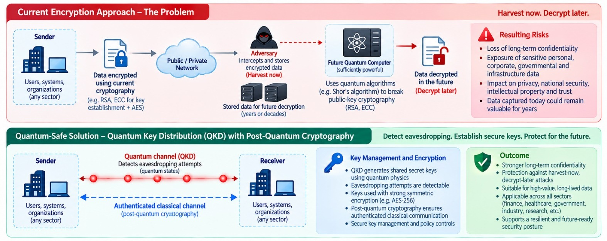
This problem motivates the investigation of quantum-resistant approaches, including post-quantum cryptography and Quantum Key Distribution (QKD), which uses quantum-mechanical principles to establish shared secret keys. When appropriately implemented alongside authenticated communication, secure key management and strong symmetric encryption, QKD offers an alternative key-distribution mechanism for protecting sensitive information against future cryptographic threats.
The primary research question addressed in this project is:
How do optical channel characteristics, satellite orbital conditions, QKD protocols, and network configurations affect the performance and feasibility of quantum key distribution over free-space optical communication systems?
The project examines how these factors influence photon detection, quantum bit error rate (QBER), secret-key generation rates, communication availability, and end-to-end key distribution.
It also investigates how an eavesdropper (Eve) may affect quantum communication and demonstrates how basis sifting, error correction, and privacy amplification help Alice and Bob establish matching keys under the assumptions of the simulation.
By comparing terrestrial links, satellite downlinks, trusted satellite relays, entanglement-based communication, and multi-satellite networks, the project aims to develop a broader understanding of the opportunities and limitations of FSO-based QKD.
The main objectives of this project are to:
Develop a basic FSO communication model to study the effects of transmission distance, beam divergence, atmospheric attenuation, receiver aperture, and detector efficiency on optical signal transmission.
Study quantum key distribution protocols, particularly BB84 and decoy-state BB84, and understand how quantum states are prepared, transmitted, measured, and processed to generate secret keys.
Investigate the effects of eavesdropping by introducing Eve into the simulation and examining how interception attempts can affect QBER and key generation.
Demonstrate quantum key post-processing, including basis sifting, LDPC-based error correction, and Toeplitz privacy amplification, to understand how Alice and Bob can obtain matching shorter keys.
Extend the FSO model to satellite communication by simulating a Low Earth Orbit (LEO) satellite and studying orbital movement, elevation angle, slant range, atmospheric losses, visibility windows, and their effects on QKD performance.
Investigate satellite-assisted key distribution between two ground stations by comparing a trusted satellite relay using BB84 with an entanglement-based approach using the BBM92 protocol.
Develop a multi-satellite QKD network model to study inter-satellite optical links, Earth obstruction, network connectivity, routing, and the availability of end-to-end secret keys.
Compare the performance of different scenarios using relevant parameters such as optical transmission efficiency, photon detection rates, QBER, secret-key rates, and communication availability.
Implement and analyze the simulations using Python, Jupyter Notebook, and GNU Octave, providing graphical visualizations, numerical results, and reproducible experiments.
Identify the limitations and potential applications of FSO-based QKD and establish a foundation for future research into practical terrestrial and satellite quantum communication networks.
The project focuses on the mathematical modelling and computer-based simulation of quantum key distribution over free-space optical communication channels. It covers four main scenarios, with the third scenario divided into two alternative communication architectures.
The simulations incorporate simplified optical propagation, orbital geometry, quantum key generation, eavesdropping, error correction, privacy amplification, and network routing where applicable.
Python, Jupyter Notebook, and GNU Octave are used to implement the models, perform numerical calculations, visualize results, and compare the different communication scenarios.
The project does not involve the physical construction or deployment of a QKD system. Advanced technologies such as quantum repeaters, quantum memories, and entanglement swapping between multiple satellites are outside its present scope.
The simulation results are intended to demonstrate the principles and performance characteristics of FSO-based QKD under defined assumptions. They do not constitute experimental validation or a complete security proof of a practical quantum communication system.
This covers overview, including the five communication architectures and their corresponding Eve-related security scenarios.
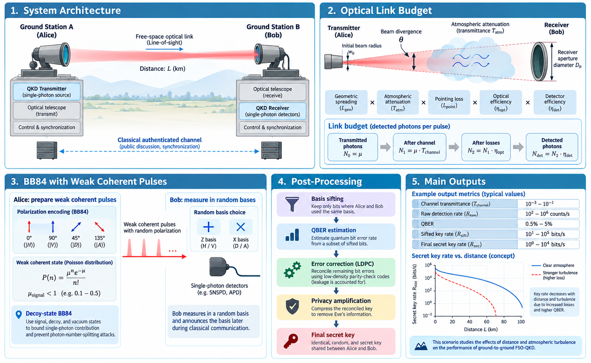
Figure 1: Ground-to-Ground Free-Space Optical Quantum Key Distribution
Illustrates a basic line-of-sight FSO link between Alice and Bob, including optical transmission, decoy-state BB84, photon detection, atmospheric losses, and the classical post-processing steps used to establish a shared secret key.
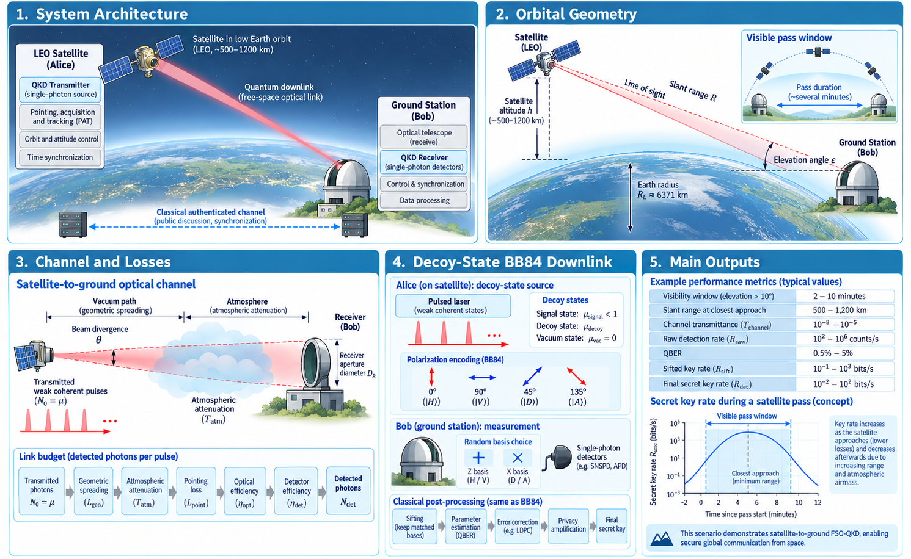
Figure 2: Satellite-to-Ground Quantum Key Distribution Architecture
Demonstrates QKD between a Low Earth Orbit satellite and a ground station, showing orbital geometry, slant range, elevation angle, optical transmission losses, and their influence on photon detection and secret-key generation.
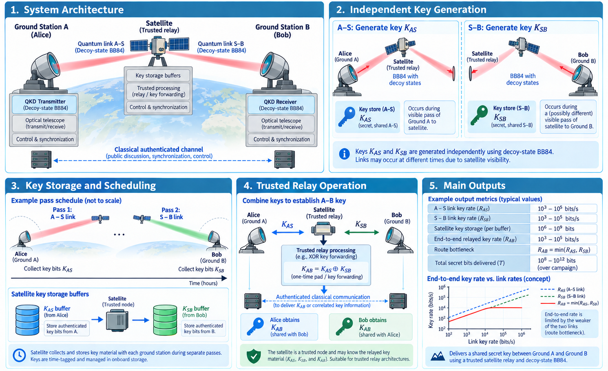
Figure 3A: Quantum Key Distribution Using a Trusted Satellite Relay
Illustrates how a single satellite independently establishes quantum keys with two ground stations using decoy-state BB84. The satellite stores and relays key material, enabling Alice and Bob to establish a common key even when their satellite communication windows occur at different times.
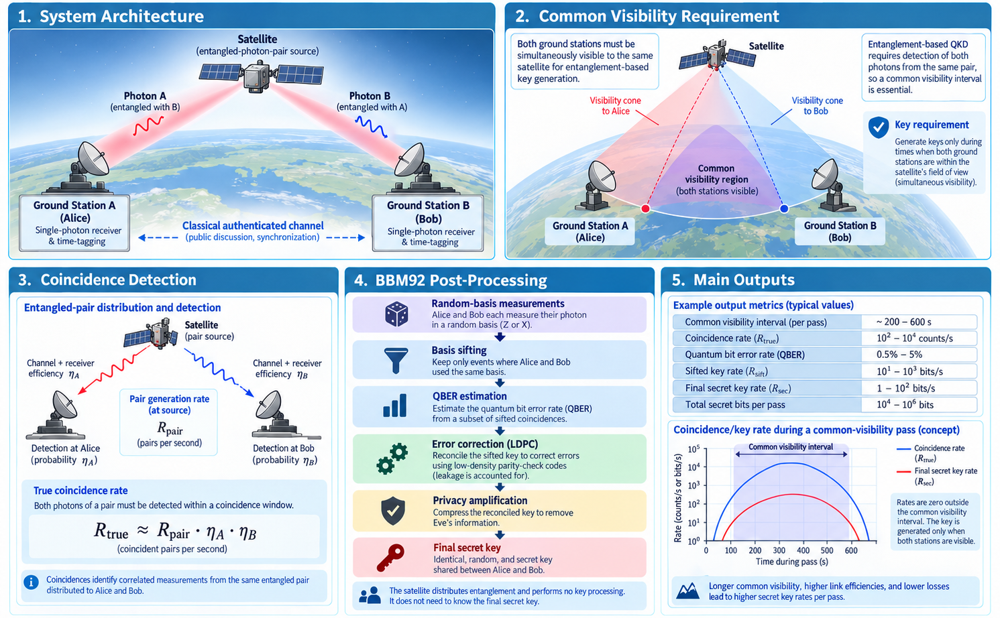
Figure 3B: Entanglement-Based Satellite Quantum Key Distribution Using BBM92
Illustrates a satellite distributing entangled photon pairs to two ground stations simultaneously. The diagram highlights common visibility, coincidence detection, quantum correlations, and the BBM92 protocol used to generate a shared secret key without requiring the satellite to know the final key.
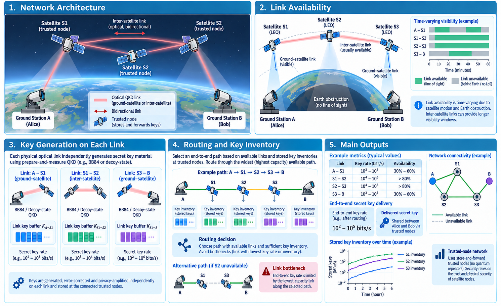
Figure 5: Multi-Satellite Trusted-Node Quantum Key Distribution Network
Presents a QKD network connecting two ground stations through multiple satellites. It demonstrates inter-satellite optical links, communication availability, Earth obstruction, individual link-key generation, and network routing for end-to-end key distribution.
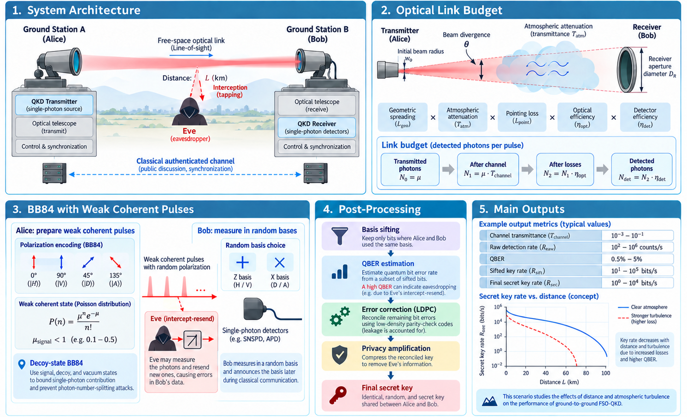
Figure 6: Eavesdropping Detection in Ground-to-Ground QKD
Demonstrates Eve attempting to intercept and measure quantum signals transmitted between Alice and Bob. The diagram illustrates how an intercept-resend attack can introduce detectable errors, increasing the quantum bit error rate (QBER), and how privacy amplification helps reduce Eve's information about the final key.
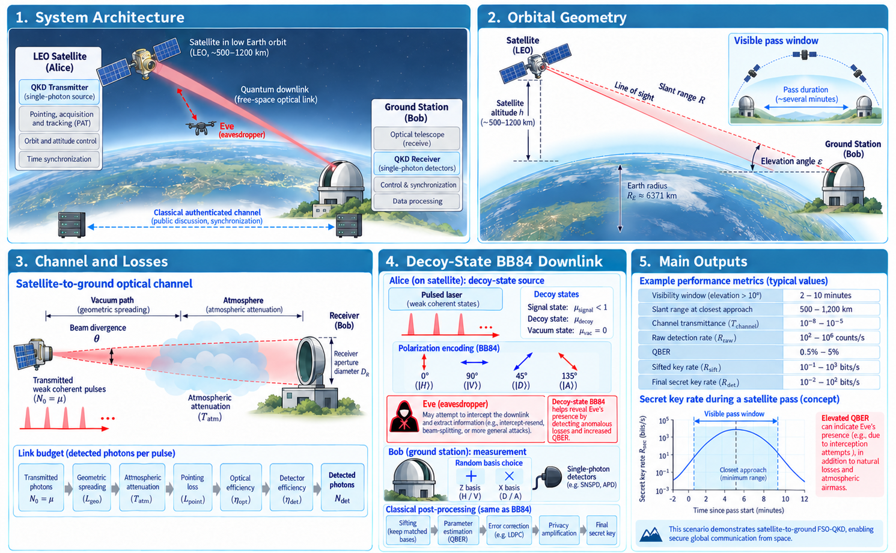
Figure 7: Eavesdropping Threats in Satellite-to-Ground QKD
Illustrates an eavesdropper attempting to intercept quantum signals along a satellite-to-ground optical link. The diagram highlights the role of decoy-state BB84, photon detection statistics, and QBER analysis in identifying disturbances and evaluating the security of the communication.
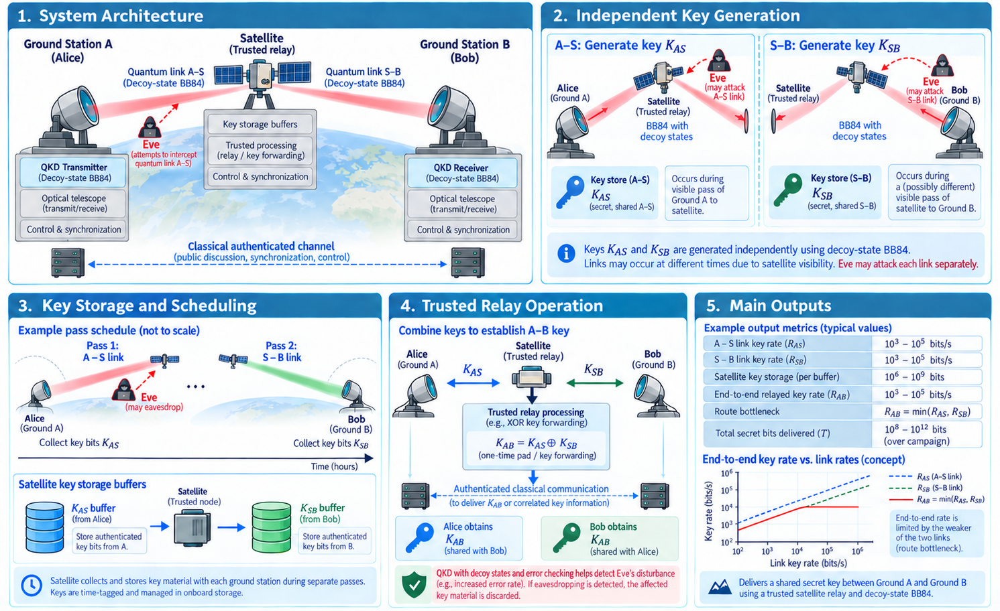
Figure 8A: Eavesdropping Analysis in Trusted Satellite Relay QKD
Demonstrates how Eve may independently target either of the quantum links connecting the satellite to the two ground stations. Each link performs its own security checks before the resulting key material is stored and used for trusted key relaying.
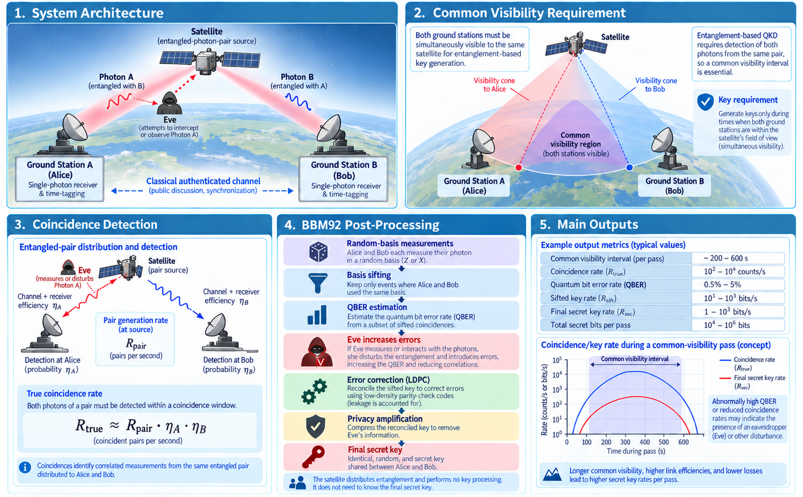
Figure 8B: Eavesdropping Detection in Entanglement-Based Satellite QKD
Illustrates Eve attempting to interact with one photon of an entangled pair distributed by the satellite. The diagram demonstrates how unauthorized measurements may disturb quantum correlations, influencing coincidence statistics and QBER, which are evaluated during BBM92 security processing.
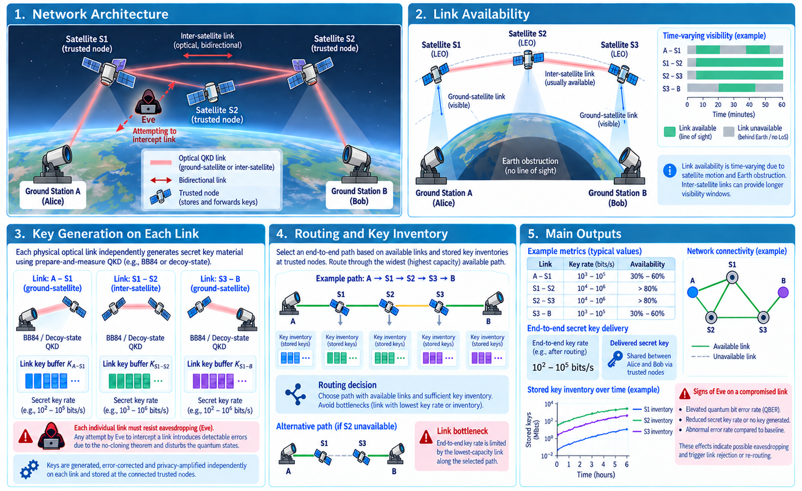
Figure 9: Security Analysis of a Multi-Satellite QKD Network
Demonstrates potential eavesdropping attempts on individual ground-to-satellite and inter-satellite quantum links. The diagram highlights link-level security checks, identification of abnormal error rates, rejection of unsuitable keys, and alternative routing through available trusted satellite nodes.
The FSO-QKD simulation project was developed using GNU Octave and Python. These technologies were selected for mathematical modelling, numerical computation, simulation, graphical visualization and analysis of the four project scenarios.
| Technology | Version | Purpose |
|---|---|---|
| GNU Octave | 10.3.0 | Mathematical modelling, numerical simulations, interactive dashboards and graphical analysis. |
| Python | 3.11.9 | Simulation development, numerical computations, QKD protocol implementation and data analysis. |
| Jupyter Notebook | N/A | Interactive execution of Python simulations, documentation, mathematical analysis and visualization. |
| VS Code | 1.138.0 |
The following libraries were identified in the project's four Jupyter notebooks.
| Package | Application in the project |
|---|---|
| NumPy | Numerical computation, array processing, mathematical operations and simulation calculations. |
| Matplotlib | Generation of graphs, plots, performance comparisons and visualization of simulation results. |
| IPython | Display of formatted Markdown and simulation results within Jupyter notebooks. |
| math | Mathematical functions and numerical calculations. |
| dataclasses | Organization and management of simulation parameters and configuration structures. |
| pathlib | File and directory management for project files and simulation outputs. |
| json | Handling structured simulation data and configuration information. |
| sys | Python path management and access to project-specific modules. |
The project also uses custom Python modules, including leo_model, network_model, network_report, stage3_model and stage3_report. These implement scenario-specific calculations, satellite network simulations, BBM92 comparisons and report generation. They are project modules rather than external Python packages.
GNU Octave 10.3.0 is used as a complementary numerical computing environment for implementing and analyzing the FSO-QKD models. Alternatively Mathlab can be used.
It supports the development of interactive simulation dashboards, modification of physical parameters, execution of numerical calculations, and generation of graphs and results.
The project uses Octave's built-in mathematical functions, plotting capabilities and GUI components to provide an interactive environment for studying the different QKD scenarios.
Python and GNU Octave provide complementary platforms for implementing the mathematical models and analyzing the simulation results. Where equivalent calculations are available in both environments, their outputs can be compared to check numerical consistency.
Jupyter Notebook provides a structured environment combining executable code, mathematical explanations, simulation results and graphical outputs. The generated HTML reports allow results to be reviewed without executing the notebooks.
Together, these technologies provide a reproducible environment for investigating terrestrial FSO links, satellite-based QKD, entanglement-based communication and multi-satellite quantum key distribution networks.
This chapter introduces the fundamental principles of Quantum Key Distribution (QKD) and explains how photons are used to establish secret cryptographic keys. It also describes the communication channels, BB84 protocol, eavesdropping detection, error correction and privacy amplification techniques used in the project.
Quantum Key Distribution requires two communication channels: a quantum channel and a classical channel.
The quantum channel is used to transmit photons carrying quantum information from the sender, Alice, to the receiver, Bob. In this project, the photons travel through a free-space optical link, which may connect two ground stations, a satellite and a ground station, or multiple satellites.
The classical channel is used for communication between Alice and Bob during key generation. They exchange information about their measurement bases, estimate errors and perform the processing needed to establish a common key. This channel is public but must be authenticated to prevent an attacker from impersonating either participant or modifying messages without detection.
An eavesdropper, conventionally called Eve, may observe the classical communication and attempt to intercept photons travelling through the quantum channel. However, unauthorized interactions with quantum states can introduce disturbances that Alice and Bob may detect through their security checks.
The simulation assumes that an authenticated classical channel is available. It does not implement a complete network authentication system.
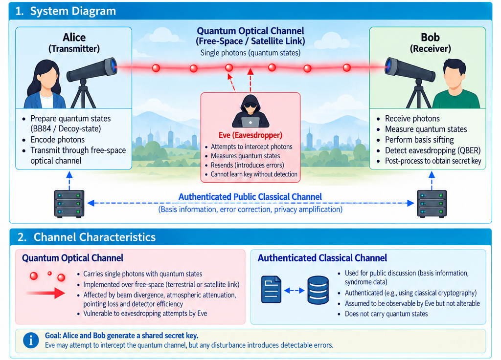
Figure 10: Alice, Bob, Eve and Their Communication Channels
The diagram illustrates the quantum optical link between Alice and Bob, the authenticated public classical channel used for key processing, and Eve's potential interception of the quantum signals.
BB84 is one of the fundamental protocols used in Quantum Key Distribution. It enables Alice and Bob to establish a shared key by preparing and measuring quantum states using randomly selected bases.
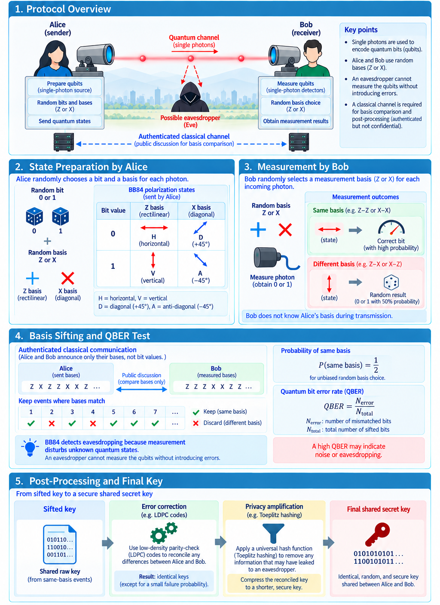
Figure 11: BB84 Quantum Key Distribution Protocol
The diagram illustrates the BB84 protocol, including quantum state preparation, polarization encoding, photon transmission, random-basis measurement, basis sifting, and QBER estimation. It also demonstrates how LDPC error correction and Toeplitz privacy amplification are used to establish a common secret key between Alice and Bob.
In the polarization-based example used in this project, Alice randomly selects a binary value, either 0 or 1, and encodes it using one of two polarization bases:
Rectilinear basis (Z): Horizontal (H) and vertical (V) polarization.
Diagonal basis (X): Diagonal (D) and anti-diagonal (A) polarization.
Bob independently selects a measurement basis for each received photon. If his chosen basis matches Alice's preparation basis, the measurement ideally reproduces the original bit. If the bases differ, the measurement outcome is random.
After transmission, Alice and Bob announce their basis choices through the authenticated classical channel. They retain only the detected events for which their bases match and discard the remaining events. This procedure is known as basis sifting.
When Alice and Bob select their bases independently with equal probabilities, approximately half of the detected events are retained:
The retained bits form the sifted keys. Alice and Bob then compare a selected portion of their data to estimate the Quantum Bit Error Rate (QBER), which represents the proportion of compared bits that disagree.
A low QBER indicates that the measured data contain relatively few errors. A higher QBER may result from optical imperfections, detector noise, atmospheric disturbances or eavesdropping. In practical QKD systems, the error estimate must also account for statistical uncertainty.
The optical model used in the first two stages of this project represents a weak laser source rather than an ideal device that emits exactly one photon at a time.
The laser intensity is reduced so that each pulse contains a small average number of photons, represented by the parameter .
For phase-randomized coherent pulses, the probability of a pulse containing exactly photons follows a Poisson distribution:
The probability of a pulse containing exactly one photon is:
For example, when the mean photon number is set to , some pulses contain no photons, some contain one photon, and a smaller proportion contain multiple photons.
This distinction is important because the security analysis cannot assume that every transmitted pulse contains exactly one photon. Multiphoton pulses may create additional opportunities for an eavesdropper to obtain information.
The project therefore uses a key-rate model that separately accounts for the single-photon contribution. However, the Stage 1 simulation obtains this contribution from the assumed channel model rather than estimating it from separate experimental datasets.
Decoy-state BB84 improves the security analysis of systems that use weak coherent laser pulses.
In this approach, Alice randomly varies the intensity of transmitted pulses. The resulting detection statistics can help Alice and Bob estimate the contribution from single-photon signals and identify behavior that may be associated with photon-number-splitting attacks.
A practical decoy-state implementation requires observations from different pulse intensities, such as signal, weak-decoy and vacuum states.
The simulations in this project use an idealized approach in which the single-photon yield and error rate are calculated from the assumed optical channel parameters. These values are used to estimate the achievable key rate.
Consequently, the resulting curves represent theoretical, asymptotic performance estimates. They do not include the complete statistical analysis of finite decoy-state measurements required for a practical security assessment.
Stage 1 also includes a simplified comparison involving Differential Phase Shift (DPS) QKD. This is used for educational purposes and does not represent a complete implementation or security proof of the DPS protocol.
One of the distinguishing features of QKD is its ability to reveal certain disturbances introduced when an eavesdropper interacts with transmitted quantum states.
In this project, the eavesdropper is represented by Eve, who attempts an intercept-resend attack.
During this attack, Eve intercepts selected signals transmitted by Alice, measures them using a randomly chosen basis, and prepares replacement states that she forwards to Bob.
Because Eve does not know Alice's preparation basis in advance, she may choose the wrong basis. Her measurement and subsequent retransmission can therefore introduce errors into Bob's results.
For an ideal BB84 system with unbiased basis choices, intercepting every signal produces an expected QBER contribution of 25% in the sifted key. When Eve intercepts only a fraction of the signals, the expected disturbance is approximately:
where represents the fraction of signals intercepted by Eve.
This relationship applies to the idealized intercept-resend model before accounting for additional channel errors.
The simulation allows Eve's interception probability to be adjusted so that its effect on the measured QBER can be studied.
Importantly, an increase in QBER does not automatically prove the presence of Eve. Similar errors can arise from detector noise, optical misalignment and atmospheric disturbances. QBER is a security-monitoring parameter, and the decision to accept or reject a key must be based on the applicable protocol and its security requirements.
The simulation demonstrates how an intercept-resend attack affects BB84 measurements. It does not reproduce every possible eavesdropping strategy or establish a complete security proof.
After basis sifting, Alice and Bob may possess slightly different bit sequences because of transmission errors, detector noise or disturbances introduced by Eve.
To establish matching keys, they must perform additional processing.
Error correction using LDPC
The project uses Low-Density Parity-Check (LDPC) codes to demonstrate information reconciliation.
Alice and Bob exchange parity-check information through the authenticated classical channel. An iterative LDPC decoder uses this information to identify and correct errors in Bob's bit sequence.
The objective is to produce identical reconciled keys.
However, the parity information exchanged during this process is public and may reveal some information about the key. This information leakage must be considered when determining the length of the final secret key.
Privacy amplification using Toeplitz hashing
Even after successful error correction, Eve may possess partial information about the reconciled key.
Privacy amplification addresses this issue by compressing the reconciled key into a shorter output using a suitable hash function.
The project demonstrates this process using Toeplitz hashing. A Toeplitz matrix is a binary matrix in which the elements remain constant along each diagonal. Alice and Bob use the same matrix to transform their matching reconciled keys into shorter bit sequences.
The matrix can be generated using a publicly shared random seed. Its security does not depend on keeping the matrix secret.
The length of the final key must be selected using an appropriate information-leakage and security analysis. Simply shortening a key does not, by itself, guarantee secrecy.
The simulation verifies whether Alice and Bob obtain matching outputs after LDPC reconciliation and Toeplitz hashing. This demonstrates the operation of the post-processing chain, but matching keys alone do not constitute proof that the resulting key is secure against every possible attack.
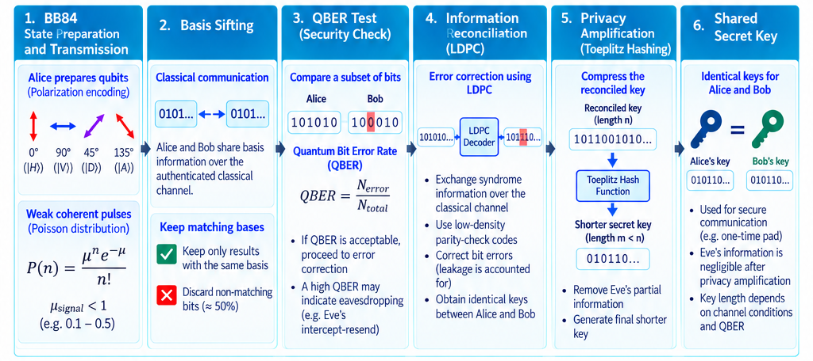
Figure 12: End-to-End Quantum Key Distribution Protocol
The diagram presents the complete key-generation process, beginning with BB84 state preparation and transmission, followed by basis sifting, QBER estimation, LDPC error correction and Toeplitz privacy amplification. The process concludes with Alice and Bob obtaining a matching final key, provided the protocol's acceptance and security conditions are satisfied.
The BBM92 protocol is an entanglement-based approach to Quantum Key Distribution. Unlike BB84, in which Alice prepares and transmits quantum states to Bob, BBM92 uses pairs of entangled photons distributed to two communicating parties.
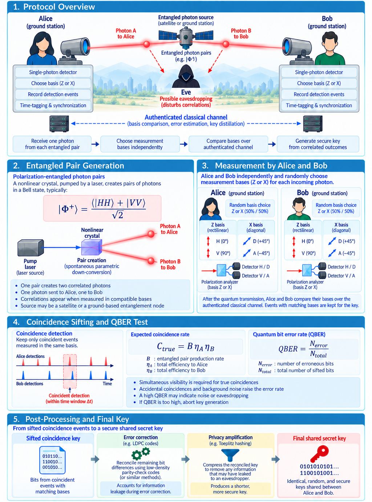
Figure 13: BBM92 Entanglement-Based Quantum Key Distribution Protocol
The diagram illustrates the BBM92 protocol, in which an entangled-photon source distributes correlated photon pairs to Alice and Bob. It demonstrates independent basis selection, simultaneous photon detection, coincidence sifting, and QBER estimation, followed by error correction and privacy amplification to establish a shared secret key.
In this project, BBM92 is investigated in Scenario 3B, where a satellite acts as an entangled-photon source and distributes one photon from each pair to Ground Station A (Alice) and the other photon to Ground Station B (Bob).
The two ground stations independently select measurement bases and record their photon detections. Using an authenticated classical channel, they identify detection events belonging to the same photon pair and retain the events measured using compatible bases.
The resulting correlated measurements are used to generate sifted keys.
Entangled-photon distribution
An example of a maximally entangled polarization state is:
Here, and represent horizontal and vertical polarization.
The two photons exhibit quantum correlations. When Alice and Bob measure their photons in the same polarization basis, their results are ideally correlated for this particular state.
Unlike the trusted satellite relay architecture, the satellite distributes entangled photons without needing to measure or obtain the final secret key.
Simultaneous visibility and coincidence detection
BBM92 requires both ground stations to receive photons from the same entangled pairs.
Therefore, the satellite must be visible to both ground stations simultaneously, and both optical links must provide sufficient transmission efficiency.
The ideal true coincidence rate is expressed as:
where:
is the entangled-pair generation rate.
is the total transmission and detection efficiency for Alice's link.
is the total transmission and detection efficiency for Bob's link.
This relationship demonstrates an important characteristic of entanglement-based QKD: losses on either optical path reduce the number of successfully detected photon pairs.
The project also accounts for accidental coincidences caused by background detections and timing effects.
After coincidence identification and basis sifting, Alice and Bob estimate QBER to evaluate the quality of their quantum correlations. An eavesdropper attempting to intercept or measure the distributed photons may disturb these correlations and introduce additional errors. However, optical imperfections, background counts and detector noise can also contribute to the observed QBER. The protocol subsequently requires information reconciliation and privacy amplification to produce a common secret key.
In this project's BBM92 simulation, these processing steps are represented through mathematical key-rate estimates rather than a complete finite-bit LDPC and Toeplitz processing demonstration. The model therefore provides an illustrative, asymptotic performance comparison and does not constitute a complete security proof
This chapter establishes a consistent numerical basis for the terrestrial and satellite calculations. I distinguish the established geometric and detector models from the DPS illustrative key-rate proxy and from BBM92 coincidence-based estimates. The same optical efficiency is not counted twice when different protocols share a physical link.
I approximate a centred Gaussian intensity profile by its initial 1/e² radius w₀ and divergence half-angle θ. The radius of the propagating beam and the collection fraction at a circular aperture of radius a are:
w(L) = √[w₀² + (θL)²] η_geo = 1 − exp[−2a² / w(L)²]
Distance L and radii are expressed in metres, and θ in radians. The collection expression assumes beam centring; tracking jitter and scintillation are not hidden inside η_geo. The terrestrial baseline uses w₀ = 0.05 m, θ = 50 μrad and a = 0.10 m. The LEO downlink uses θ = 10 μrad and a = 0.50 m under its separately declared parameters.
The ground-to-ground link represents fixed attenuation α in dB/km across distance d in kilometres. Satellite downlinks use the finite atmospheric shell of effective height 20 km with a specified 2 dB zenith loss; only the in-atmosphere segment accumulates this modelled loss. The entire satellite slant range affects geometric beam expansion, but the space segment is not assigned terrestrial atmospheric loss.
η_atm,ground = 10^(−αd/10) η_point = 10^(−Aₚ/10)
η_total = η_geo × η_atm × η_point × η_opt × η_det
The loss factors are multiplied once each. Stage 4 vacuum inter-satellite links use no atmospheric attenuation or atmospheric fading, and their own receiver aperture, divergence, pointing allowance and detector settings. A ground optical edge exists only when the actual elevation meets its selected cutoff. The network model also verifies geometric clearance of an inter-satellite segment above Earth.
For mean signal photon number μ, total path efficiency η, dark/background probability per gate Y₀ and optical misalignment e_d, I use the bounded Stage 2 detector convention below. The historical Stage 1 baseline retains its documented small-Y₀ additive approximation, so I do not equate the two outputs outside the regimes where the approximation is valid.
S = 1 − exp(−μη) Qμ = S + (1−S)Y₀
Eμ = [e_d S + 0.5(1−S)Y₀] / Qμ
QBER is undefined when no detections occur, in which case the model produces zero rate. For an entropy argument x, h₂(x) = −x log₂(x) − (1−x) log₂(1−x), with endpoint values by continuity. This entropy is used with distinct protocol-specific privacy terms, rather than automatically transferring the BB84 proof to DPS.
The BB84 comparison uses model-known single-photon yield Y₁ and error rate e₁, not finite measured signal, weak-decoy and vacuum statistics. The resulting rate is an asymptotic engineering benchmark, not a finite-key security certificate.
r_decoy = q × max{ Q₁[1−h₂(e₁)] − f_EC Qμ h₂(Eμ), 0 }
Q₁ = μ exp(−μ)Y₁ R_BB84 = r_decoy f_pulse p_signal
An unbiased BB84 basis choice gives q = 0.5. The satellite and network scenarios use a nominal 100 MHz pulse rate and a 0.8 signal allocation in their BB84 settings. The finite Alice–Bob–Eve experiment is a separate detected-bit demonstration, not a direct transcript of every optical event in the pass model.
I introduced a coherent pulse train with relative phase 0 for bit 0 and π for bit 1. Consecutive pulses interfere at a balanced one-slot-delay receiver. A train with N pulses provides N−1 interior relative-phase positions; boundary time slots are discarded and explicit guard slots separate trains. There is no BB84 random-basis sifting in this DPS model.
aₖ = √μ exp(iφₖ) φₖ − φₖ₋₁ = π bₖ₋₁
E₊,ₖ = (aₖ + aₖ₋₁)/2 E₋,ₖ = (aₖ − aₖ₋₁)/2
The detection calculation assumes quasi-static efficiency over neighbouring pulses and independent threshold detectors. Visibility V and a separately specified constant phase offset δ determine the correct/wrong port signal proportions. I do not add a BB84 polarization-error term to these DPS phase errors.
e_opt = [1 − V cos(δ)]/2 λ = μη
p_c = 1 − (1−d)exp[−λ(1−e_opt)]
p_w = 1 − (1−d)exp(−λe_opt)
Q_DPS = p_c + p_w − p_c p_w
E_DPS = [p_w(1−p_c) + 0.5p_c p_w] / Q_DPS
Here d is the registered background probability per detector and open gate; η already contains detector efficiency. A simultaneous click is assigned a random bit and contributes half an error on average. No-click events do not enter the detected bit string. When Q_DPS = 0, E_DPS is undefined and the rate is zero.
The extension calculates a collision-inspired privacy fraction for the stated mean photon number μ < 0.5, effective QBER e, and reconciliation overhead f_EC. The expression is restricted to the declared individual-attack-related error interval instead of being extrapolated outside its domain.
C(e) = 1 − e² − (1−6e)²/2 0 ≤ e ≤ 6/38
s_proxy = max{−(1−2μ)log₂[C(e)] − f_EC h₂(e), 0}
R_DPS,proxy = f_clock × duty × N/(N+G) × (N−1)/N × Q_DPS × s_proxy
The derived quantity is explicitly an illustrative DPS rate proxy: this detector, pulse-train, postselection and fading combination has not been supplied with a composable security proof or a separately justified phase-error bound. All integrated, stored or routed quantities derived from it are likewise proxy budgets; they must not be presented as certified secret key material. The old DPS teaching curve remains distinct from the newer protocol-statistics calculation.
The new fading factor F represents collected irradiance or optical power, rather than field amplitude. Under a normalized phenomenological log-normal model, X is standard normal and σ is the standard deviation of log irradiance. The un-clipped factor has unit mean and variance exp(σ²)−1.
F = exp(σX − σ²/2) E[F] = 1
Three modes are available: deterministic F = 1, independent log-normal Monte Carlo draws, and correlated log-normal draws. For increasing physical times tₖ, the correlated Gaussian process is initialized in its stationary distribution and updated as follows:
ρₖ = exp[−(tₖ₊₁−tₖ)/τ_c]
Xₖ₊₁ = ρₖ Xₖ + √(1−ρₖ²) Zₖ
For this study σ = 0.3, correlation time τ_c = 2 s and seed 123 unless otherwise specified. These are assumptions, not measured meteorological conditions or parameters derived from Cₙ² or Rytov variance. The implementation clips optical efficiency to a physical upper limit before multiplying the detector efficiency, records the clipping fraction and maintains independent fading streams for different ground links. F = 1 is enforced on vacuum inter-satellite edges.
I calculate instantaneous QBER only where events are detected. The arithmetic mean of those QBER samples differs from a pooled error ratio when the expected number of detections changes with time. I therefore report both sample-mean QBER and pooled QBER = integrated expected errors / integrated expected detections. I similarly distinguish the mean rate from the rate calculated at mean channel efficiency.
K_model = ∫ R(t) dt ≈ Σ ½[R(tₖ)+R(tₖ₊₁)] Δtₖ
For DPS, K_model is the integral of an illustrative rate proxy; for BBM92 it is the modelled asymptotic key estimate. Contact duration, sample count, time step and elevation cutoff accompany each result. Deterministic refinements and fixed-path subsampling are used to examine numerical convergence rather than resampling turbulence at every resolution.
The BBM92 architecture distributes one member of each Bell pair to each ground station and requires simultaneous visibility. For pair production B and independently faded arm efficiencies η_A and η_B, the true coincidence expectation and singles follow:
C_true = B η_A η_B Sᵢ = B ηᵢ + Dᵢ + Nᵢ
With full coincidence window τ and timing acceptance g, the implemented high-loss continuous-wave calculation recomputes accidental coincidences, total coincidences and QBER after both atmospheric arm efficiencies have been updated.
C_acc = [1−exp(−S_A τ)][1−exp(−S_B τ)] / τ
C = g C_true + C_acc
E = [e_pair g C_true + 0.5 C_acc] / C
R_BBM92 = q C × max[1−f_EC h₂(E)−h₂(E), 0]
The BBM92 result is a separate asymptotic estimate under symmetric basis-independent error assumptions. It is not the DPS proxy, and its pair-generation resources differ from the coherent-pulse BB84 and DPS sources. The satellite is not assigned the final BBM92 key, and the present code does not execute a complete finite-bit BBM92 LDPC and Toeplitz transcript.
Initial sifted-key discrepancy
After BB84 basis sifting, Alice and Bob may hold slightly different bit strings. Low-Density Parity-Check (LDPC) information reconciliation uses a sparse binary parity-check matrix to provide constraints on an unknown error pattern without revealing Alice’s entire key. All arithmetic below is over GF(2), where addition is XOR and 1 + 1 = 0 (mod 2).
Alice: x_A = [1 0 1 1 0 0]ᵀ = 101100
Bob: x_B = [1 1 1 1 0 0]ᵀ = 111100
Illustrative disagreement rate = 1 / 6 = 16.67%
The only difference is Bob’s second bit. This deliberately small example illustrates the matrix operations; a six-bit sample and its apparent QBER cannot establish a usable secret key.
Sparse parity-check matrix and Alice’s syndrome
H = [ 1 1 0 1 0 0 ]
[ 1 0 1 0 1 0 ]
[ 0 1 1 0 0 1 ]
A row of H defines a parity constraint. Alice calculates her syndrome s_A = H x_A (mod 2). The selected sums in the three rows are:
s_A,1 = (1 + 0 + 1) mod 2 = 0
s_A,2 = (1 + 1 + 0) mod 2 = 0
s_A,3 = (0 + 1 + 0) mod 2 = 1
Result: s_A = [0 0 1]ᵀ = 001
Alice publishes 001 over an authenticated classical channel; she does not transmit the entire six-bit string.
Bob’s syndrome and syndrome difference
Bob uses the same H and independently computes s_B = H x_B (mod 2):
s_B,1 = (1 + 1 + 1) mod 2 = 1
s_B,2 = (1 + 1 + 0) mod 2 = 0
s_B,3 = (1 + 1 + 0) mod 2 = 0
Result: s_B = [1 0 0]ᵀ = 100
Δs = s_A ⊕ s_B = 001 ⊕ 100 = 101
With e = x_A ⊕ x_B, Δs = H e (mod 2).
Error identification and correction
The second column of H is [1 0 1]ᵀ, exactly matching Δs. Under the single-error assumption, the second bit is the likely erroneous position.
Estimated error: e = [0 1 0 0 0 0]ᵀ
Corrected Bob key: x_B ⊕ e = 111100 ⊕ 010000 = 101100
Therefore: x_A = x_B,corrected = 101100
Relation to the project’s full LDPC calculation
The saved project study-guide run describes 1,197 sifted bits, 598 parity-check rows, a sparse graph with three edges per bit, and decoder convergence in five iterations. It subsequently compares the corrected bit strings in the simulation. The initial log-likelihood ratio for bit-error probability p is:
LLR_initial = ln[(1 − p) / p]
Check nodes and variable nodes exchange messages, and Bob updates his error estimate until its syndrome meets the parity constraints or the iteration limit is reached. The public syndrome reveals information. A simple conservative demonstration estimate of reconciliation leakage is the number of published check rows, m; exact independent leakage may depend on the binary rank of H and other public disclosures.
leak_EC ≈ m
f_EC,observed ≈ leak_EC / [n h₂(QBER)]
For the saved demonstration, n = 1,197, m = 598 and QBER = 48 / 1,197. The study guide reports f_EC,observed ≈ 2.058. This is distinct from the idealized rate-model input f = 1.16 and is not automatically substituted into that formula.
Rationale and reconciled input
Even after reconciliation, Eve may know partial information from interaction with quantum signals and publicly transmitted parity information. A randomly selected universal hash can compress the reconciled string, provided the output length is justified by an entropy bound and leakage accounting.
Reconciled input: x = [1 0 1 1 0 0]ᵀ = 101100
Final key: k = T x (mod 2)
Construct a 3 × 6 Toeplitz matrix
A Toeplitz matrix is constant along diagonals from top left to bottom right. This example maps a six-bit input to three output bits:
T = [ 1 0 1 1 0 1 ]
[ 1 1 0 1 1 0 ]
[ 0 1 1 0 1 1 ]
The first row is 101101 and the first column is 110. Their shared top-left element gives 6 + 3 − 1 = 8 binary seed positions. The hash seed may be publicly agreed; it need not be secret.
Step-by-step binary matrix multiplication
k₁ = (1×1 + 0×0 + 1×1 + 1×1 + 0×0 + 1×0) mod 2
= 3 mod 2 = 1
k₂ = (1×1 + 1×0 + 0×1 + 1×1 + 1×0 + 0×0) mod 2
= 2 mod 2 = 0
k₃ = (0×1 + 1×0 + 1×1 + 0×1 + 1×0 + 1×0) mod 2
= 1 mod 2 = 1
Output: k = [1 0 1]ᵀ = 101
Demonstrated transformation: 101100 → 101
Alice and Bob compute the same output because they share the same reconciled string and Toeplitz matrix. The matrix multiplication illustrates privacy amplification but does not establish that this arbitrary three-bit result is secret.
Selecting a defensible output length
A finite-key analysis must bound Eve’s uncertainty about the pre-reconciliation string and subtract the information disclosed in classical post-processing. A schematic form based on leftover-hash reasoning is:
ℓ ≲ H_min^ε(X | E) − leak_EC − 2 log₂(1 / ε_PA)
| Symbol | Meaning |
|---|---|
| ℓ | Final key length in bits |
| H_min^ε(X | E) | A suitable bound on conditional smooth min-entropy |
| leak_EC | Information disclosed through error correction |
| ε_PA | Chosen privacy-amplification security parameter |
LIMITATION The exact output-length relation, smoothing, correctness and security-parameter terms depend on the chosen protocol and proof. This six-bit example has no established entropy bound and must not be described as a provably secure three-bit key.
Purpose and declared assumptions
Phase-randomized weak coherent pulses follow a Poisson photon-number distribution. Alice changes the pulse intensity between signal, weak-decoy and vacuum settings so that detection and error statistics can constrain the single-photon contribution. This worked calculation extends the project’s model with a sample weak-decoy intensity and a chosen channel efficiency; it is not an independently measured dataset.
| Parameter | Symbol | Illustrative value |
|---|---|---|
| Signal intensity | μ | 0.50 photons/pulse |
| Weak-decoy intensity | ν | 0.10 photons/pulse |
| Vacuum intensity | 0 | 0 photons/pulse |
| Total transmittance | η | 0.01 (1%) |
| Background yield | Y₀ | 2 × 10⁻⁶ per gate |
| Misalignment error | e_d | 0.015 |
| Random background error | e₀ | 0.5 |
| Error-correction factor | f | 1.16 |
| Basis-sifting factor | q | 0.5 |
The selected η = 0.01 is not the computed transmittance of any specific 20 km FSO scenario. The signal μ, background yield, misalignment and f values agree with the Stage 1 parameter choices; the weak-decoy intensity and η are illustrative additions.
Poisson probabilities and multiphoton contribution
Pₓ(n) = xⁿ e⁻ˣ / n!
Pₓ(0) = e⁻ˣ; Pₓ(1) = x e⁻ˣ; Pₓ(n ≥ 2) = 1 − e⁻ˣ − x e⁻ˣ
For μ = 0.50:
Pμ(0) = e⁻⁰·⁵ = 0.606531
Pμ(1) = 0.5 e⁻⁰·⁵ = 0.303265
Pμ(n ≥ 2) = 1 − 0.606531 − 0.303265 = 0.090204
For ν = 0.10:
Pν(0) = 0.904837; Pν(1) = 0.090484;
Pν(n ≥ 2) = 0.004679
Consequently, approximately 9.02% of signal pulses are multiphoton pulses in the Poisson source model, compared with approximately 0.468% of weak-decoy pulses. This motivates constraining the photon-number-conditioned yields using distinct intensity statistics.
Detection gain and QBER
Using the simplified low-background gain and error expressions:
Qₓ = Y₀ + 1 − exp(−ηx)
Eₓ Qₓ = e₀Y₀ + e_d[1 − exp(−ηx)]
For signal pulses (μ = 0.50):
Qμ = 0.000002 + 1 − exp(−0.005) = 0.004989521
Eμ Qμ = 0.5(0.000002) + 0.015[1 − exp(−0.005)]
= 0.000075812812
Eμ = 0.000075812812 / 0.004989521 = 0.0151944 = 1.51944%
For weak decoy and vacuum, the same formula gives:
| Intensity | Gain Qₓ | QBER Eₓ |
|---|---|---|
| Signal: μ = 0.50 | 0.004989521 | 1.51944% |
| Weak decoy: ν = 0.10 | 0.001001500 | 1.59685% |
| Vacuum: 0 | 0.000002000 | 50.00000% |
The signal-state gain corresponds to approximately 4,990 detections per million transmitted signal pulses. Vacuum-only detections result from noise and are modelled as random bit values.
Lower bound on the single-photon yield
For an asymptotic vacuum-plus-weak-decoy calculation, assume photon-number-conditioned yields are independent of whether the pulse was labelled signal or decoy. The lower-bound expression is:
Y₁ᴸ = μ / (μν − ν²) × { Qν exp(ν) − (ν²/μ²) Qμ exp(μ)
− [(μ² − ν²)/μ²]Y₀ }
The prefactor is 0.5 / (0.05 − 0.01) = 12.5. The bracketed terms, evaluated without premature rounding, are:
0.001106828859 − 0.000329053163 − 0.000001920000
= 0.000775855695
Y₁ᴸ = 12.5 × 0.000775855695 = 0.009698196
Interpretation: lower bound ≈ 0.9698% on single-photon detection yield.
3.5 Upper bound on the single-photon error rate
e₁ᵁ = [Eν Qν exp(ν) − e₀Y₀] / (νY₁ᴸ)
= 0.000016674449 / 0.000969819619
= 0.017193351 ≈ 1.71934%
The upper bound is obtained from the weak-decoy erroneous-detection rate after accounting for the vacuum background contribution.
Lower-bound single-photon gain
Q₁ᴸ = μ exp(−μ) Y₁ᴸ
= 0.5 exp(−0.5) × 0.009698196
= 0.002941127
Q₁ᴸ is the lower-bound contribution to the gain from signal-state pulses containing one photon.
Simplified asymptotic secret-key-rate calculation
h₂(p) = −p log₂(p) − (1 − p) log₂(1 − p)
R = q { Q₁ᴸ [1 − h₂(e₁ᵁ)] − Qμ f h₂(Eμ) }
Using the previously calculated error bounds:
h₂(e₁ᵁ) = h₂(0.017193351) = 0.125377805
h₂(Eμ) = h₂(0.015194407) = 0.113532528
Single-photon contribution = Q₁ᴸ[1 − h₂(e₁ᵁ)] = 0.002572375
Error-correction cost = Qμ × 1.16 × h₂(Eμ) = 0.000657109
R = 0.5 × (0.002572375 − 0.000657109)
R = 0.000957633 bits per signal pulse
If a transmitter emits 100 million total pulses per second and assigns 80% of them to the signal intensity, the illustrative asymptotic aggregate is:
100,000,000 × 0.80 × 0.000957633 ≈ 76,611 bits/s
RATE LIMITATION The 80% signal allocation and 100 MHz repetition rate are additional worked-example assumptions. This figure excludes finite-key penalties, authentication consumption, operational downtime and practical implementation overhead. It is not measured hardware throughput.
| Stage | Main calculation | Result and significance |
|---|---|---|
| Decoy-state parameter estimation | Poisson statistics; bounds Y₁ᴸ, e₁ᵁ and Q₁ᴸ | An asymptotic estimate of single-photon contribution and key-rate trend. |
| LDPC reconciliation | s = Hx (mod 2); Δs = He (mod 2) | Corrects candidate bit mismatches using authenticated public parity information. |
| Toeplitz privacy amplification | k = Tx (mod 2) | Compresses reconciled material subject to entropy/leakage limits. |
The three operations address different aspects of QKD. Decoy analysis limits how much reliance can be placed on multiphoton-emitting sources; LDPC helps Alice and Bob agree on the same string; and privacy amplification reduces the exploitable information potentially held by Eve. Neither matching key strings nor positive asymptotic model rates alone constitute a composable finite-key security proof.
In the first stage I modelled a 20 km line-of-sight link between Alice and Bob with Gaussian beam propagation, fixed terrestrial attenuation and a single circular receiving aperture. The nominal source beam radius is 0.05 m, divergence 50 μrad, receiver radius 0.10 m, attenuation 0.20 dB/km, optical efficiency 0.70 and detector efficiency 0.25. The original BB84 signal mean photon number is 0.50; the new DPS train uses its own μ = 0.10, visibility 0.98, 100 MHz clock, 0.8 duty factor and 1024 pulses per train.
I retained the earlier separation between the distance-dependent optical-rate study and the finite BB84 Alice–Bob–Eve experiment. The latter tests basis sifting, an intercept-resend disturbance, LDPC syndrome reconciliation and Toeplitz hashing using a separately selected channel-error parameter. It is not an implementation of finite-key DPS distillation.
As distance increases, geometric spreading and fixed atmospheric loss reduce the signal-generated click rate; background clicks account for a larger share of detections. In the illustrative DPS calculation the QBER rises towards the background-dominated regime and the calculated rate falls to zero. Visibility has a separate influence on the wrong-port intensity and hence on QBER. The steep onset of a positive proxy rate in the visibility sweep is a property of the selected privacy and reconciliation expression, not proof of a universal security threshold.

Figure 14: Terrestrial DPS distance and visibility sensitivity
The left panels show the distance dependence of modelled QBER and the illustrative rate. The right panels isolate the visibility dependence with all other parameters fixed.
I simulated 5000 equally spaced instants from t = 0 to 99.98 s at a 0.02 s interval with σ = 0.3 and τ_c = 2 s. The instantaneous fading factors were applied to the collected optical power and the DPS click/error statistics were recalculated for every sample. The deterministic comparison remained a constant channel over the same interval.
Stage 1 recorded DPS model output
| Measured simulation quantity | Recorded result |
|---|---|
| Sampled time span | 0–99.98 s; 5000 samples |
| Mean DPS QBER | 1.745% |
| Pooled DPS QBER | 1.698% |
| 95th-percentile instantaneous QBER | 2.124% |
| Mean illustrative rate | 5,074.31 proxy bits/s |
| 5th-percentile illustrative rate | 2,656.86 proxy bits/s |
| Rate-outage fraction | 0.00% |
| Accumulated illustrative rate | 507,352.58 proxy bits |
| Efficiency clipping | 0.00% |
The sample-mean QBER exceeded the pooled QBER because the fading trajectory assigns different weights to detection-rich and detection-poor periods. No sample in this particular run had a nonpositive illustrative rate, but one seeded realization is not a confidence statement about real atmospheric availability.
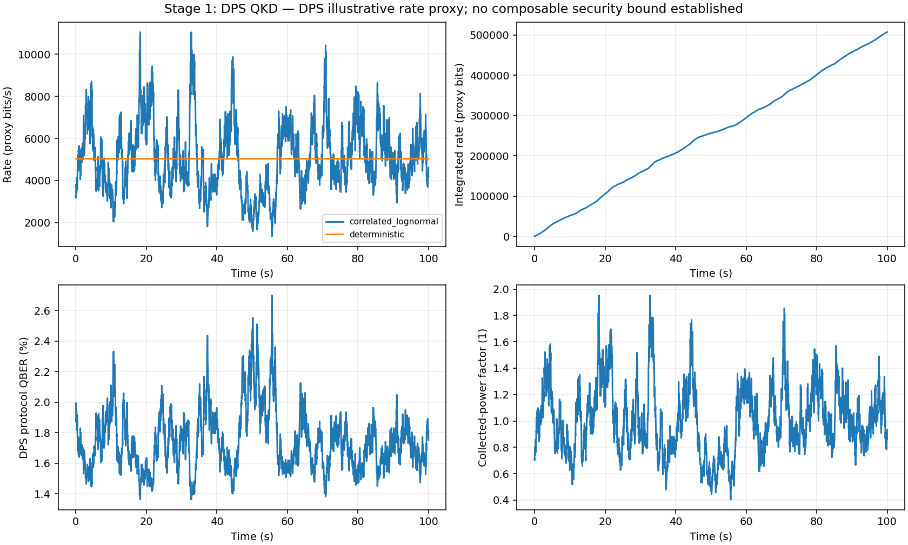
Figure 15: Terrestrial DPS time series under correlated log-normal fading
The four panels display the instantaneous proxy rate, accumulated proxy budget, QBER and collected-power factor. The deterministic rate is a fixed-channel baseline; the fluctuating trace is one seeded realization.

Figure 16: Terrestrial DPS Monte Carlo distributions
Fading, DPS-QBER and proxy-rate distributions are evaluated over independent draws. Distribution statistics complement rather than replace the chronological result.
The historical 20 km BB84 baseline recorded a total detection-path efficiency of approximately 1.3761 × 10⁻³, a detection gain of 6.8983 × 10⁻⁴, BB84 QBER of 1.641% and model-derived decoy rate of 1.3629 × 10⁻⁴ bits per signal pulse. These quantities arise from the earlier deterministic BB84 assumptions and should not be compared numerically with the new DPS outputs without also accounting for differing mean photon numbers, clock allocation and protocol-specific rate models.
The simulated intercept-resend example demonstrates a mechanism by which Eve may increase QBER; optical noise can create similar disagreement. Successful LDPC correction and matching Toeplitz outputs demonstrate functional post-processing, but final-key equality alone cannot establish a composable secrecy claim.
For the second stage I modelled an ideal circular LEO satellite at 500 km altitude above a spherical Earth of radius 6371 km. The link is sampled at 401 positions within a 10° elevation cutoff, giving a modelled interval from −221.318 to +221.318 s. A centred Gaussian beam spreads over the complete slant range; a 20 km effective atmospheric shell and 2 dB zenith attenuation are applied only in the atmosphere. The receiver radius is 0.50 m and a fixed 1 dB pointing allowance is included.
The orbital geometry remains deterministic while the atmospheric transmission factor changes between simulation realizations. This separates the effect of changing elevation and slant range from the additional variation caused by turbulence. Below-cutoff samples cannot generate link output even when a random fading factor is large.
Stage 2 recorded DPS model output
| Simulation output | Recorded result |
|---|---|
| Pass sampling | 401 samples; 442.64 s window |
| Mean sampled QBER | 4.725% |
| Pooled QBER | 1.869% |
| 95th-percentile QBER | 14.888% |
| Peak illustrative rate | 28,494.97 proxy bits/s |
| Mean illustrative rate | 4,070.46 proxy bits/s |
| Sample rate outage | 31.92% |
| Time-weighted rate outage | 31.75% |
| Integrated illustrative rate | 1,806,234.30 proxy bits |
The deterministic pass forms a smooth envelope with the principal maximum near the best link geometry. Fading produces peaks and troughs about that envelope. At lower elevation the received useful signal falls relative to background, increasing QBER. The difference between 4.725% mean sampled QBER and 1.869% pooled QBER is a useful reminder that uniformly averaging percentages does not weight a high-loss interval by its small detection count.
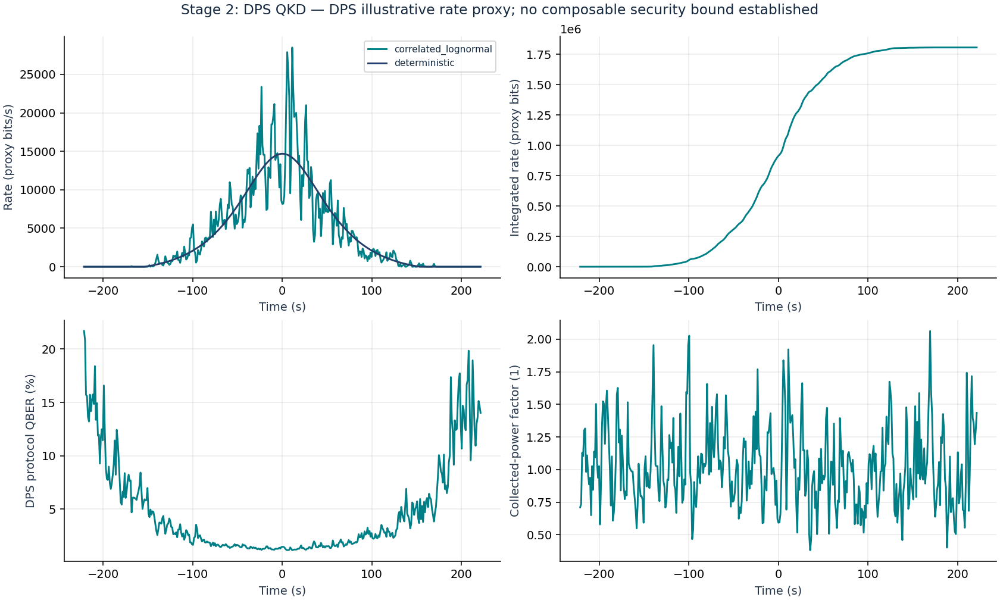
Figure 17: LEO satellite DPS pass: faded and deterministic outputs
The panels contain instantaneous rate, cumulative rate integral, QBER and fading factor across the sampled pass. The integrated DPS curve represents a proxy budget rather than proven secret bits.
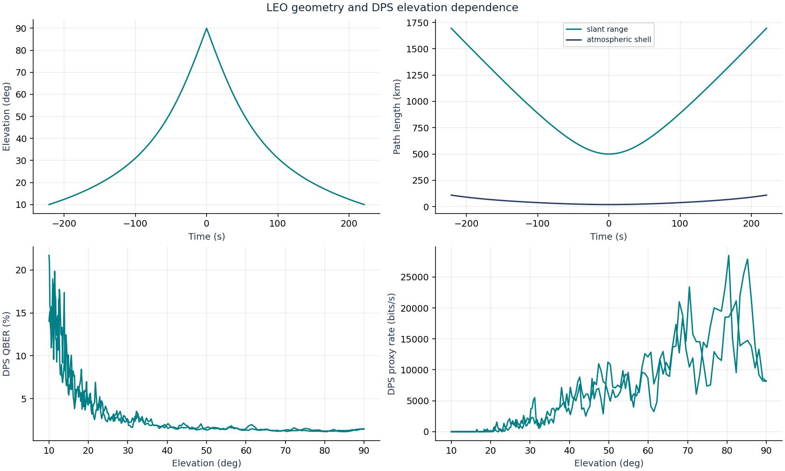
Figure 18: LEO geometry and elevation dependence
The distance and atmospheric-path panels distinguish beam-spreading distance from the portion accumulating atmospheric loss. QBER and rate are plotted against elevation.
An optical line of sight is a necessary but insufficient condition for positive modelled key rate. The time-window and cutoff conditions determine available samples; optical attenuation, background detections and reconciliation terms determine whether those samples have a nonzero rate. The numerical quadrature converges with finer time steps in the deterministic control; changes between independently sampled fading paths must not be interpreted as quadrature error.
In Mode A, Ground A and Ground B form separate quantum links with the satellite. The satellite is trusted and can learn or reconstruct the end-to-end relayed key. Each ground edge is evaluated independently using its protocol parameters and its own atmospheric fading stream. For the illustrative DPS extension, a route or pool budget is explicitly a proxy; the corresponding decoy-BB84 option retains its separate asymptotic interpretation.
The network is observed for 1200 s using 601 points with 1000 km separation between the ground sites and the default 500 km orbit. A simultaneous path is limited by the smaller rate of the two ground edges. A separate causal pool calculation stores key material generated on the two links and bounds subsequent relay delivery by the smaller accumulated inventory, allowing contacts at different times. Those two accounting methods answer different operational questions.
Stage 3A recorded trusted-relay DPS output
| Simulation output | Recorded result |
|---|---|
| Ground-station separation | 1000 km |
| Duration and resolution | 1200 s; 601 samples |
| Peak simultaneous DPS rate | 5,581.10 proxy bits/s |
| Mean simultaneous DPS rate | 231.72 proxy bits/s |
| Simultaneous rate outage | 86.02% |
| Integrated simultaneous rate | 278,523.90 proxy bits |
| Ground A cumulative pool generation | 1,651,385.85 proxy bits |
| Ground B cumulative pool generation | 1,661,016.28 proxy bits |
| Delivered pool-accounted quantity | 1,651,385.85 proxy bits |
The integrated simultaneous-route value is substantially smaller than the stored-pool delivery estimate in this geometry because the individual contact windows overlap for only a short interval. The pool value is a distinct accounting result, not an alternative value for the same simultaneous transport experiment.
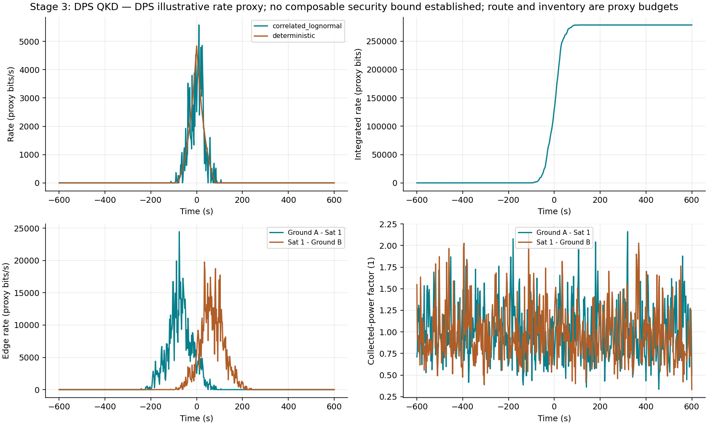
Figure 19: Two ground links, simultaneous DPS bottleneck and fading
The individual arm rates peak at different times. The end-to-end instantaneous calculation is nonzero only where an appropriate simultaneous trusted route is available.

Figure 20: Trusted relay: link inventory and delivery results
Separate generated-key pools can accumulate across contacts. The plots distinguish physically generated link budgets, remaining buffers and the relay delivery bound.
In Mode B the satellite produces pairs and sends one photon to each ground station. Both arms must be visible simultaneously. The model recomputes singles, true coincidences, accidentals and QBER after assigning independent fading factors to the two downlinks. This architecture is not a DPS relaying variation: its two-arm coincidence dependence and asymptotic BBM92 security assumptions are different.
Table 7.2: Stage 3B recorded BBM92 output
| Coincidence-based quantity | Recorded result |
|---|---|
| Nominal pair generation | 10,000,000 pairs/s |
| Common-visibility samples | 151 of 601 |
| Highest true coincidence rate | 36.03 coincidences/s |
| Highest BBM92 asymptotic rate | 9.531 bits/s |
| Integrated BBM92 estimate | 721.703 model bits |
The BBM92 integrated estimate in this recorded run is about 722 model bits. This value should not be divided into or ranked against the DPS trusted-relay proxy without normalizing the distinct sources, security analyses, timing and receiver resources. The entangled source provides coincidences only during common visibility, whereas trusted relay key pools may store classical material from separate passes.
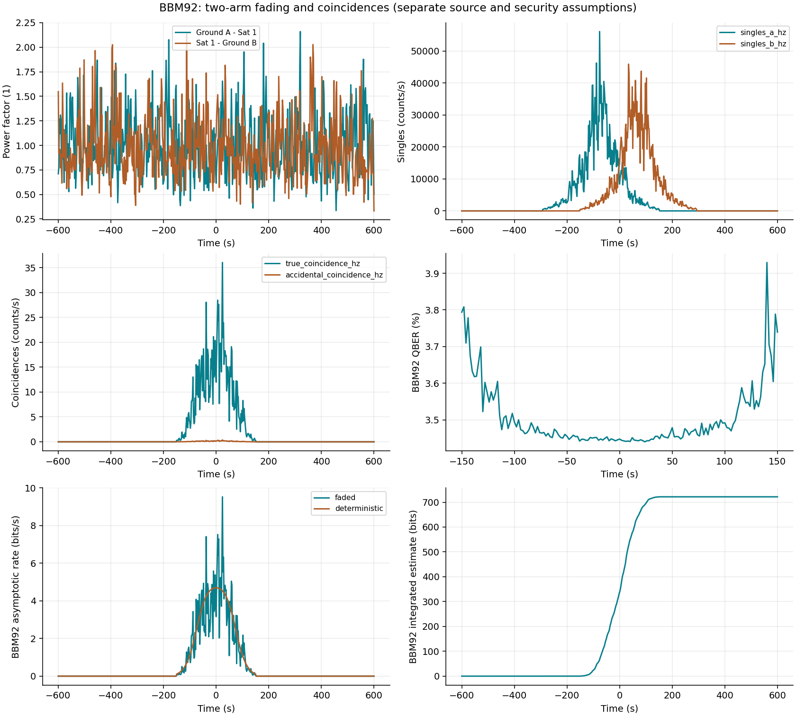
Figure 21: BBM92 two-arm fading, detection and coincidence analysis
The six panels show separate arm fading, singles, true and accidental coincidences, coincident-error behaviour, BBM92 rate and its cumulative model estimate. Outside common visibility no pairs contribute to the BBM92 key.
The trusted relay must be trusted with intermediate link key material, and the model presumes an authenticated classical channel. In BBM92 the satellite need not obtain the final key, but the simplified coincidence and error model by itself does not establish security for an arbitrary malicious source or a finite-key implementation. I therefore interpret Mode A and Mode B separately instead of reporting a protocol winner.
The fourth stage extends the trusted-link model to multiple satellite nodes. The reported configuration uses two satellites, 3000 km ground-station separation, a 1200 s observation interval and 601 samples. Ground-to-satellite links use the atmospheric-shell model, whereas satellite-to-satellite links operate in vacuum and require an unobstructed segment above Earth. Each edge has independent optical resources under the model assumptions.
For each sampled time, I recompute ground-edge efficiencies under their own fading streams, then evaluate protocol gain, QBER and link rate. Only after updating the individual capacities does the widest-path algorithm choose a route. A disconnected network yields zero route capacity; one global fading multiplier is never applied to an already selected route.
R_route(t) = max over available paths P { min over edges e∈P R_e(t) }
The path equation expresses the bottleneck of one simultaneously active trusted route. Stage 4 does not optimize aggregate multi-route flow, shared telescope scheduling or stored key inventories across multiple satellites. All DPS-based route rates remain illustrative proxies.
Stage 4 recorded DPS network output
| Simulation output | Recorded result |
|---|---|
| Number of satellite nodes | 2 |
| Ground separation | 3000 km |
| Duration and resolution | 1200 s; 601 samples |
| Peak selected-route rate | 5,548.53 proxy bits/s |
| Mean selected-route rate | 789.81 proxy bits/s |
| Sampled rate-outage fraction | 76.71% |
| Time-weighted outage | 76.67% |
| Integrated route rate | 949,352.71 proxy bits |
The selected-route rate becomes positive only during limited intervals. Fading can alter a ground-edge bottleneck even if orbital geometry does not change at the same instant; the vacuum inter-satellite edge remains unaffected by atmospheric fading. The observed outage fraction is for this network layout and one selected random realization, not a predicted operational availability for a deployed constellation.

Figure 22: Multi-satellite route rate and atmospheric fading
The panels display the selected route rate, accumulated proxy budget, contributing edge rates and edge-specific fading. Route capacity is recomputed from the individual edges at every sample.
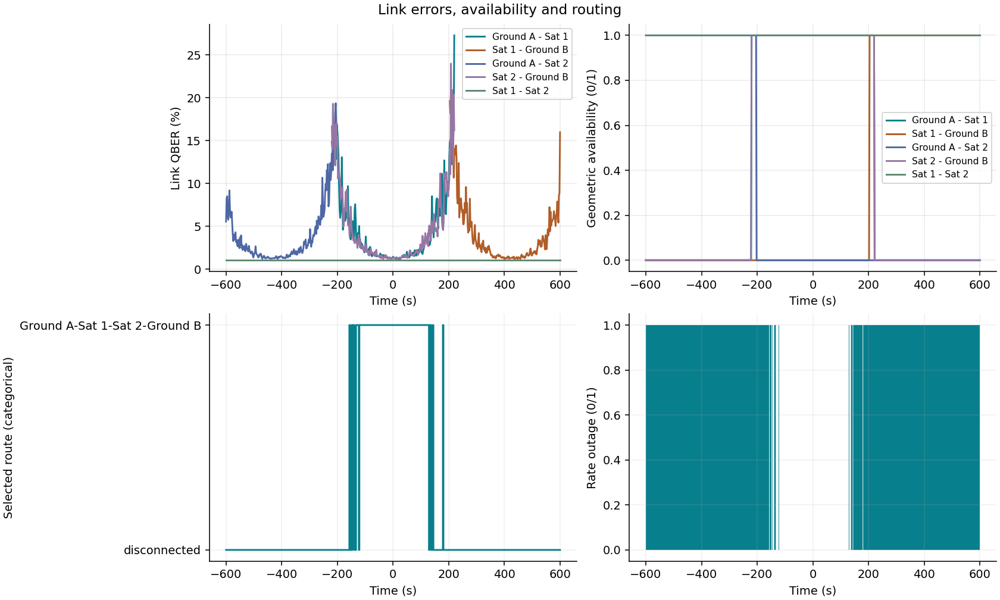
Figure 23: Network availability, selected route and outage
Link visibility and bottleneck rate are displayed with route-selection and rate-outage indicators. A geometric contact can still yield zero positive DPS proxy rate.

Figure 24: Network fading realizations and turbulence sensitivity
The histogram shows independent integrated proxy realizations at fixed geometry. The right panel shows the mean and 5–95% sample interval across five seeds as log-irradiance sigma changes.
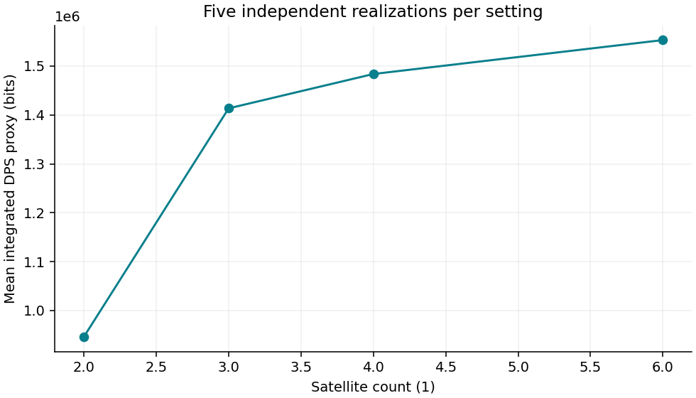
Figure 25: Satellite-count sensitivity of the multi-satellite model
The mean integrated DPS proxy varies with satellite count for five independent realizations per setting under the model-defined independent edge resources; it is not a constellation design optimum.
The four scenarios share the Gaussian optical model and declared DPS/fading settings, but their outputs represent different physical conditions and resource structures. Stage 1 maintains a fixed 20 km terrestrial link, Stage 2 varies one satellite pass, Stage 3 uses two ground links and two distinct relay architectures, and Stage 4 selects simultaneous paths through a trusted network. A numerical comparison must therefore retain each scenario’s geometry, observation window, hardware assumptions and rate security label.
Recorded single-seed DPS extension results
| Scenario | Mean QBER | Integrated proxy | Rate outage |
|---|---|---|---|
| 1: LOS terrestrial | 1.745% | 507,353 | 0.0% |
| 2: LEO downlink | 4.725% | 1,806,234 | 31.9% |
| 3A: trusted relay | link-dependent | 278,524 | 86.0% |
| 4: trusted network | link-dependent | 949,353 | 76.7% |
These integrals are illustrative DPS proxy-bit budgets, not certified secure bits. Their observation periods, pulse budgets, number of active links and network definitions differ, so the ordering of values does not rank the protocols or scenarios. In Stage 3B, 721.703 model bits are obtained from the separate asymptotic BBM92 coincidence calculation under its 10 million pairs/s source and common-visibility requirement.
Across the models, short low-efficiency periods raise instantaneous QBER while contributing relatively few detections to the pooled error fraction. The Stage 1 run gives 1.745% mean sampled QBER compared with 1.698% pooled QBER; the LEO run gives 4.725% and 1.869%, respectively. These differences are consequences of the weighting definition and the selected fading and background conditions, rather than conflicting calculations.
The trusted network selects one simultaneous bottleneck route and assumes independent optical terminals and pulse resources per edge. The separate Stage 3A inventory assumes storage of pairwise classical keys. The BBM92 architecture relies on a different entangled-pair source and high-loss coincidence approximation. I did not use these alternatives to infer an unconditional performance advantage for one protocol.
The following application case study places my four-stage FSO-QKD simulation in the context of Bahrain Sample Bank (BSB), a fictional banking institution. BSB is a scenario defined for this project, not an identified customer, an audited production network or a claim of deployed quantum security. I use its assumed site locations, replication processes and continuity requirements to interpret my numerical models and develop an implementation concept. Distances and network details supplied for the case study are planning assumptions; no telecom route survey or bank equipment inventory has been performed.
BSB operates a primary data centre at its headquarters in Seef, Bahrain, a disaster recovery (DR) site in Amwaj, Bahrain, and an offshore computing site in Riyadh, Saudi Arabia. Core banking workloads run on IBM i (AS/400), while the mobile banking environment uses Oracle. The case assumes that these workloads and their data reside on IBM storage infrastructure, with data synchronized from headquarters to the other computing sites. The precise IBM storage models, replication software, database replication topology, bandwidth and encryption termination points are not specified and therefore are not assumed in my analysis.
The existing HQ-to-DR data connection is a dedicated telecom-provider fibre service. Traffic from Bahrain to Riyadh is carried over site-to-site VPNs on the public internet. Numerous branches in Bahrain and Saudi Arabia also use site-to-site VPN connectivity. The approximately 14-15 km Seef-Amwaj and 420 km Bahrain-Riyadh figures are straight-line separations, not surveyed fibre route lengths or free-space satellite optical path lengths.
Assumed BSB sites and communications
| Location / traffic path | Distance or role | Existing service / project assumption |
|---|---|---|
| Seef headquarters (HQ) | Primary production data centre | IBM i core banking, Oracle mobile banking and IBM storage; primary replication source. |
| Amwaj disaster recovery (DR) | Approximately 14-15 km geodesic separation from HQ | Dedicated carrier fibre; receives replicated data and assumes production during planned BCP drills. |
| Riyadh offshore site | Approximately 420 km geodesic separation from Bahrain HQ | Site-to-site VPN over public internet; offshore replicated computing and storage. |
| Bahrain and KSA branch offices | Multiple sites; individual distances not specified | Site-to-site VPNs; branch traffic is separate from the HQ-DR storage replication stream. |
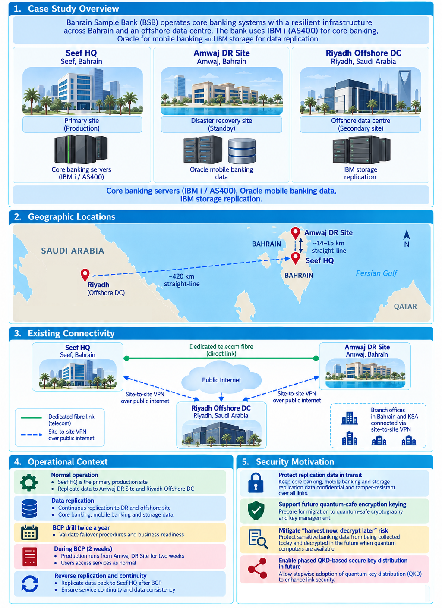
The proposed geographic figure will locate Seef HQ, Amwaj DR and the Riyadh offshore site and distinguish the existing dedicated HQ-DR fibre from the Bahrain-Riyadh public-internet VPN. It will show approximate air distances without presenting them as measured cable routes or satellite slant ranges.
BSB performs two planned business continuity planning (BCP) drills each year. During each drill, production workloads operate from Amwaj DR for approximately two weeks before a controlled return to Seef HQ. Encryption and key management must therefore function when replication direction and production endpoints change. The design must protect HQ-to-DR synchronization, DR-to-HQ reverse synchronization, Bahrain-to-Riyadh transfers and relevant branch traffic without making banking availability dependent on clear weather or a satellite pass.
The long-term confidentiality problem is harvest-now, decrypt-later: a future adversary may archive encrypted traffic and try to recover previously exchanged session keys using a cryptographically relevant quantum computer. This concern applies particularly to quantum-vulnerable public-key key establishment; it does not imply that QKD itself encrypts application data. In this case study, established authenticated symmetric encryption protects the replication payload, while QKD is investigated as an additional possible key-material source. A supported migration toward post-quantum key establishment, including appropriately implemented ML-KEM as standardized in NIST FIPS 203, can be evaluated on conventional VPN infrastructure. Authentication and algorithm support require their own validation.
My application objective is to evaluate a phased, quantum-safe key-establishment and data-in-transit encryption architecture for BSB that protects the replication of IBM i core banking and Oracle mobile banking information among Seef HQ, Amwaj DR and Riyadh, while preserving two-week DR operation and allowing selective expansion to branch connections.
• Map the existing and proposed communications to the terrestrial, single-satellite and multi-satellite geometries implemented in the four numerical stages.
• Evaluate optical efficiency, QBER, instantaneous rate, contact availability, fading outage and accumulated model-rate quantities under explicitly stated source and security assumptions.
• Distinguish QKD key delivery from AES-256 authenticated encryption of the actual replication stream and identify practical KMS, HSM, encryption-gateway and authentication interfaces.
• Assess trusted-relay satellite exposure separately from the BBM92 architecture and preserve both protocols as distinct implementation alternatives.
• Define key continuity, reverse-replication and fallback requirements for the bank's two annual, two-week DR production exercises.
• Compare dedicated QKD at selected data centres with conventional post-quantum VPN upgrades at branches, without claiming unmeasured performance, cost savings or regulatory compliance.
The bank's storage and application replication flows remain conventional data traffic. In the proposed architecture, supported encryption gateways or compatible application/transport security endpoints apply authenticated symmetric encryption, for example a correctly configured AES-256-based authenticated mode. A key-management layer identifies authorized endpoint pairs, handles key identifiers, rotation, access control, expiry, monitoring and audit, and transfers key material to the compatible encryption endpoints. I do not assume that IBM i, Oracle, IBM storage controllers or existing VPN appliances natively ingest QKD keys; those interfaces and vendors must be examined before a proof of concept.
Where compatible QKD equipment is available, separate physical quantum links supply key material to the bank's key-management entities. ETSI GS QKD 014 describes an application-facing REST key-delivery interface that can inform integration design, but conformance of any selected equipment remains to be demonstrated. Existing fibre or IP data paths continue carrying the encrypted replication traffic. A carrier-provided fibre service does not automatically expose dark fibre or a transparent optical wavelength suitable for QKD; physical loss, access, wavelength coexistence and intermediate amplification/switching must be surveyed. An ordinary public-internet VPN cannot serve as a quantum optical channel.
QKD-derived key material and a supported post-quantum key-establishment result could be incorporated under an explicitly validated hybrid key-derivation and authentication design. Merely concatenating keys or claiming a fallback is quantum-safe without a security analysis would be insufficient. Key generation, key usage and rekey intervals must be sized using measured application traffic, equipment limits and outage requirements. The present simulation does not demonstrate full-rate one-time-pad encryption, production replication throughput or an approved hybrid cryptographic protocol.
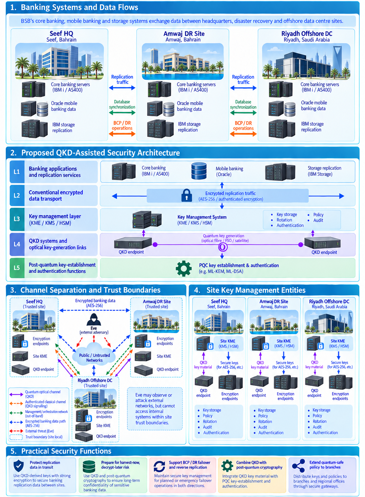
The proposed figure will separate banking replication traffic and conventional encrypted data transport from QKD optical channels, site key-management entities, supported encryption endpoints and post-quantum key-establishment functions. The authenticated classical channel and management trust boundaries will be indicated distinctly.
Stage 1: Seef headquarters to Amwaj disaster recovery
Stage 1 represents the short terrestrial connection between HQ and DR. My existing 20 km terrestrial example supplies a bounding educational comparison for the assumed 14-15 km separation, but I have not labelled that baseline as a direct 15 km BSB site simulation. The Gaussian optical model and DPS/log-normal turbulence extension enable evaluation of a possible rooftop FSO quantum channel, subject to a verified unobstructed optical line of sight, building permissions, alignment, dust, haze, weather and daylight background. The bank's existing telecom fibre provides a second potential physical-QKD route only if the provider can supply a compatible optical path and the fibre-specific model is separately evaluated. Encryption of IBM i/Oracle replication remains on the existing high-capacity transport, not on the quantum-photon stream.
Stage 2: Satellite quantum link with a Bahrain bank terminal
Stage 2 models a LEO satellite communicating with one Bahrain ground terminal at a time. I use changing elevation, slant range, finite atmospheric-shell loss, telescope collection, QBER and contact-window integration to study whether a satellite service could replenish a local key pool. A single downlink establishes a key between that satellite and its ground receiver; it does not alone establish a shared Bahrain-Riyadh key. Actual ground coordinates, satellite ephemerides, weather availability, provider equipment and a service contract would be needed for deployment. Intermittent visibility makes authenticated local key storage and outage policy central design parameters.
Stage 3A: Bahrain-Riyadh trusted satellite relay
In the trusted-relay scenario, the satellite establishes independent link keys with Bahrain and Riyadh. Their key pools may be replenished on different passes and used in an authenticated relay operation that makes common material available to the two ground endpoints. The existing Bahrain-Riyadh VPN continues to carry encrypted replication data. The satellite is a trusted node because it can know the relayed key material, and the bank must evaluate operator control, key custody, HSM protection, authentication and legal jurisdiction. The 420 km site separation is not substituted for the ground-to-satellite slant ranges calculated by the simulator. The DPS-derived relay figures remain proxy budgets until a protocol-compatible security proof and operational key management are established.
Stage 3B: Bahrain-Riyadh entanglement-based BBM92
Stage 3B evaluates a different international-key architecture: a satellite emits entangled photon pairs and sends one photon to each BSB ground terminal. Both sites must see the satellite simultaneously; rates depend on efficiencies of both atmospheric paths, accepted true coincidences, accidental coincidences, basis sifting and QBER. Under this model the satellite need not receive the final key, although that feature alone is not proof of arbitrary untrusted-source security. The existing BBM92 output is an asymptotic model estimate, not a complete finite-key deployment result. Its pair-source and detection resources differ from BB84/DPS, so raw plotted rates do not establish a universal protocol preference.
Stage 4: Multi-satellite international key connectivity
Stage 4 extends the trusted-node model to multiple satellites and optional inter-satellite optical links. Fading affects each atmospheric ground edge before route capacity is recalculated, whereas vacuum inter-satellite edges do not receive atmospheric attenuation. The widest-path output describes one simultaneous capacity-bottleneck route; it does not include a complete scheduled constellation, stored-key inventory across all nodes, quantum repeaters or operational service-level guarantees. Its banking relevance is a possible future independent path for replenishing authorized site keys, contingent on actual constellation access and appropriate trusted-node arrangements. Branches do not automatically gain end-to-end QKD by connecting over conventional VPNs to a QKD-enabled central site.
Case-study interpretation of the simulation stages
| Project stage | BSB use case | Deployment condition / evidence boundary |
|---|---|---|
| Stage 1 - terrestrial | Seef-Amwaj HQ/DR key establishment | Compare rooftop FSO with separately qualified fibre QKD; 20 km baseline is not a measured 15 km bank link. |
| Stage 2 - LEO | Satellite-to-Bahrain key replenishment | Requires suitable ground terminal, real ephemeris and provider; single downlink does not create a Riyadh key. |
| Stage 3A - trusted | Bahrain-Riyadh pairwise key relay | Satellite operator becomes trusted; separate passes and authenticated key storage are required. |
| Stage 3B - BBM92 | Bahrain-Riyadh entangled-pair option | Requires simultaneous visibility and coincidence hardware; asymptotic model, no finite-key proof. |
| Stage 4 - network | Possible redundant trusted satellite routes | Modelled widest simultaneous route; constellation, scheduling and inventories are not proven. |
I distinguish the four numerical research stages from proposed bank implementation phases. The following phases are a forward-looking plan: none is represented as a completed BSB production deployment. Decisions about capital expenditure, supplier selection and regulatory approval remain outside the numerical simulation.
Proposed BSB implementation phases
| Phase | Scope of work | Acceptance condition |
|---|---|---|
| 0 - baseline | Inventory IBM i, Oracle, storage replication, VPN crypto, certificate lifecycle, traffic and data-retention needs. | Document existing encryption endpoints, key-establishment exposure, replication directions and business requirements. |
| 1 - PQC pilot | Evaluate supported quantum-resistant or hybrid VPN key establishment between Bahrain and Riyadh and selected branches. | Validated interoperability, authenticated handshakes and acceptable VPN availability. |
| 2 - local QKD PoC | Survey Seef-Amwaj fibre suitability and FSO line of sight; test physical QKD where practical. | Measured optical loss, QBER, usable key rate, uptime and environmental availability. |
| 3 - encryption integration | Test vendor-supported KMS/HSM and encryption-gateway delivery to the replication transport. | Confirmed key lifecycle, encryption correctness and replication throughput/lag within targets. |
| 4 - BCP exercise | Run planned failover, two-week DR operation, reverse replication and restoration with monitored keys. | No unapproved downgrade; agreed recovery objectives and key-continuity requirements met. |
| 5 - satellite pilot | Investigate available trusted-relay/BBM92 suppliers, terminal siting and satellite passes. | Proven access, security assumptions, measured rates and operator trust/compliance assessments. |
| 6 - expansion | Assess multiple trusted satellites and a branch-oriented quantum-safe connectivity strategy. | Demonstrated operating model and justified total cost of ownership. |
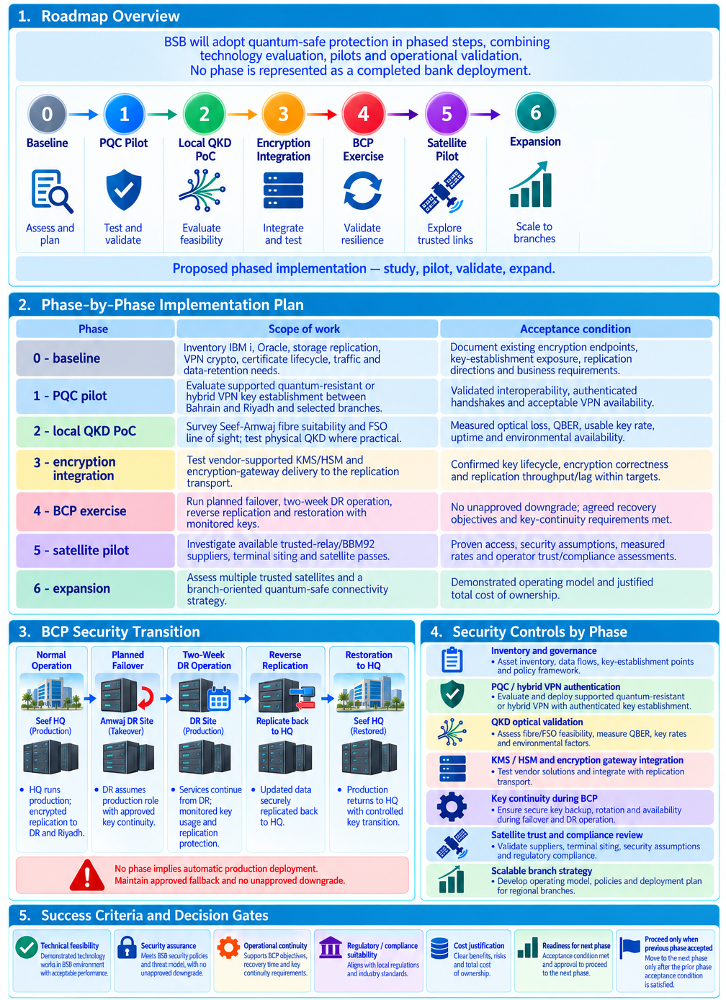
The proposed roadmap figure will distinguish the near-term post-quantum VPN work, terrestrial HQ-DR QKD proof of concept, encryption integration, planned DR exercises, international satellite pilot and later network expansion. No phase is represented as completed bank deployment.
Twice per year BSB shifts production from Seef to Amwaj for approximately two weeks. During this interval the cryptographic design must support the changed active site, protected Riyadh traffic, reverse synchronization and eventual return to HQ. I therefore use a site-pair key-pool concept as an engineering extension rather than equating the optical channel rate directly to continuous business-system availability. A proposed planning balance is K_available(t) = K_initial + K_generated(t) - K_consumed(t), with expiration, key usage and security policy handled explicitly in a practical implementation. The current model does not derive real consumption from the bank's traffic or prove a 14-day available reserve.
BSB BCP encryption continuity criteria
| Operating mode | Cryptographic and replication requirement |
|---|---|
| Normal production at HQ | Protect Seef-Amwaj and Bahrain-Riyadh replication; record key IDs, rotations, audit and link availability. |
| Planned HQ-to-DR cutover | Preserve authenticated peer identities and compatible encryption as Amwaj assumes active production. |
| Two-week DR production | Maintain protected outbound Riyadh traffic and all necessary branch access throughout the exercise. |
| Reverse replication | Encrypt changed data from DR back to HQ using approved keys and authenticated endpoints. |
| Return to HQ | Re-establish normal direction without key reuse, uncontrolled fallback or loss of replica consistency. |
| QKD outage or depleted pool | Follow a pre-approved, quantum-safe continuity policy; alert operators rather than silently downgrading or stopping replication. |
For BSB branches, extending quantum-safe cryptography through supported VPN software and compatible gateways may reuse existing IP connectivity and avoid optical terminals at every location. Such branch tunnels may use a properly supported post-quantum or hybrid key-establishment mechanism, but they are not end-to-end QKD links. A branch can use a centrally governed KMS only if delivery, authorization and communication with that KMS remain suitably authenticated and protected. A central QKD link cannot automatically make ordinary public-internet branch traffic quantum-key-distributed.
Branch and core-site options
| Architecture | Appropriate case-study scope | Additional cost drivers and limitations |
|---|---|---|
| PQC/hybrid VPN at branches | Many existing Bahrain/KSA VPN branches | Gateway support/licensing, firmware, certificates, monitoring, interoperability and managed migration. |
| QKD-assisted central sites | HQ, DR and potentially Riyadh | Optical terminals, suitable fibre or telescope sites, KMS/HSM, encryption appliances and operations. |
| Dedicated QKD to every branch | Only branches with justified high-security needs and a real optical path | Additional quantum endpoints, circuits, alignment/service contracts, redundancy and support; ordinary VPN is insufficient. |
No BSB-specific cost estimate or claim of branch savings can be established from the available case-study inputs. Before costing, the bank would need branch counts, VPN platform inventory, actual carrier service types, optical-route surveys, required key-refresh policy, encryption throughput, storage replication licensing, satellite service availability and support pricing. The bank's Bahrain and Saudi legal, privacy, banking supervisory and outsourcing obligations also require a jurisdiction- and licence-specific assessment rather than an assumed compliance conclusion.
My current numerical results support statements about optical efficiency, modeled detection and QBER, log-normal fading, contact availability, coincidence statistics and rate estimates or proxies. They do not contain measured BSB replication throughput, branch traffic, fibre loss, actual GPS positions, agreed RPO/RTO, vendor integration or cryptographic accreditation. I therefore treat the following operational measurements as acceptance criteria for future trials rather than as completed observations.
Technical and banking acceptance measures
| Measure | Meaning for the bank / evidence required |
|---|---|
| QBER and optical key rate | Measured on physical QKD equipment; DPS proxy cannot be presented as certified key throughput. |
| Key-pool availability | Synchronized generation, use, expiry, outages and reserve across both endpoints. |
| Replication throughput and lag | Measured IBM i/Oracle/storage transport behaviour under the proposed encryption layer. |
| RPO and RTO | Bank-approved recovery objectives, validated during a two-week BCP exercise. |
| Failover, reverse transfer and restoration | Successful protected operations through each change of production role. |
| Cryptographic fallback | Documented and approved quantum-safe policy when physical QKD is unavailable. |
| Cost and regulatory feasibility | Documented supplier quotations, carrier service characteristics and jurisdiction-specific assessment. |
The case-study interpretation is accordingly a phased engineering proposal, not a finding that QKD has already prevented harvest-now, decrypt-later attacks on bank traffic. The immediate quantum-safe option is to assess compatible post-quantum protection on existing IP links; terrestrial and satellite QKD remain candidate additional key sources subject to device security, authentication, supplier availability and deployment validation. All cited DPS integrals in my results remain illustrative proxy quantities.
I developed and extended a four-stage FSO-QKD simulation that progresses from a terrestrial link to a LEO downlink, alternative single-satellite architectures and a trusted multi-satellite network. The original BB84, decoy-state BB84 and finite-bit Alice–Bob–Eve post-processing demonstrations remain separate from the new DPS optical-statistics model; the single-satellite entanglement scenario retains its own BBM92 coincidence formulation.
The numerical observations show how received optical power, background detections, satellite elevation, independent fading on ground links and route bottlenecks affect the available protocol statistics. Correlated log-normal fluctuations change both instantaneous QBER and rate, making sample-mean QBER and pooled QBER materially different. The four scenarios were executed with recorded parameters, and the project contains passing Python and archived Octave verification results.
The work constitutes an engineering and educational simulation under explicit assumptions. In particular, DPS accumulated values remain modelled proxy budgets and cannot be interpreted as certified secret keys. This distinction provides a coherent basis for interpreting the simulation figures and defining the additional security and experimental validation needed for a practical QKD deployment.
I acknowledge the use of OpenAI’s ChatGPT and Codex in the development and documentation of this project. ChatGPT assisted with diagrams, technical explanations and report refinement, while Codex supported the development, debugging and testing of Python and GNU Octave simulations. The project objectives, technical requirements and design decisions were directed by me. I reviewed the AI-assisted outputs and take responsibility for the final content, results and interpretations.
[1] N. K. Kundu, Quantum Key Distribution and Post-Processing, course lecture materials, Post Graduate Diploma in Advanced Communication Engineering with Quantum and AI Integration, Indian Institute of Technology Delhi, 2026. Course materials, including relevant Lecture 1-23 notes.
[2] U. Nath, R. Meena, S. Ali and N. K. Kundu, "A Tutorial on Quantum Key Distribution Protocols With Interactive Simulation of QBER and SKR Performance Metrics," IET Quantum Communication, vol. 7, article e70033, 2026. DOI: https://doi.org/10.1049/qtc2.70033
[3] X. Ma, B. Qi, Y. Zhao and H.-K. Lo, "Practical decoy state for quantum key distribution," Physical Review A, vol. 72, article 012326, 2005. DOI: https://doi.org/10.1103/PhysRevA.72.012326
[4] C. H. Bennett and G. Brassard, "Quantum cryptography: Public key distribution and coin tossing," Theoretical Computer Science, vol. 560, pp. 7-11, 2014. Original work presented in 1984. DOI: https://doi.org/10.1016/j.tcs.2014.05.025
[5] E. Waks, H. Takesue and Y. Yamamoto, "Security of differential-phase-shift quantum key distribution against individual attacks," Physical Review A, vol. 73, article 012344, 2006. DOI: https://doi.org/10.1103/PhysRevA.73.012344
[6] C. H. Bennett, G. Brassard and N. D. Mermin, "Quantum cryptography without Bell's theorem," Physical Review Letters, vol. 68, pp. 557-559, 1992. DOI: https://doi.org/10.1103/PhysRevLett.68.557
[7] S. P. Neumann, T. Scheidl, M. Selimovic, M. Pivoluska, B. Liu, M. Bohmann and R. Ursin, "Model for optimizing quantum key distribution with continuous-wave pumped entangled-photon sources," Physical Review A, vol. 104, article 022406, 2021. DOI: https://doi.org/10.1103/PhysRevA.104.022406
[8] S. R. Kondamuri, N. K. Kundu and A. Ghanshyala, "Quantum Communication in Weakly Turbulent Channels: Error Analysis and Capacity Bounds," IEEE Wireless Communications Letters, vol. 13, no. 12, pp. 3658-3662, 2024. DOI: https://doi.org/10.1109/LWC.2024.3485533
[9] Y. Luo, X. Cheng, H.-K. Mao and Q. Li, "An Overview of Postprocessing in Quantum Key Distribution," Mathematics, vol. 12, no. 14, article 2243, 2024. DOI: https://doi.org/10.3390/math12142243
[10] L. Guo, Q. Ran, D. Jin and D. Huang, "QKD Iterative Information Reconciliation Based on LDPC Codes," International Journal of Theoretical Physics, vol. 59, pp. 1717-1729, 2020. DOI: https://doi.org/10.1007/s10773-020-04438-9
[11] M. Tomamichel, C. Schaffner, A. Smith and R. Renner, "Leftover hashing against quantum side information," IEEE Transactions on Information Theory, vol. 57, no. 8, pp. 5524-5535, 2011. DOI: https://doi.org/10.1109/TIT.2011.2158473
[12] National Institute of Standards and Technology, Module-Lattice-Based Key-Encapsulation Mechanism Standard, FIPS 203, August 2024. DOI: https://doi.org/10.6028/NIST.FIPS.203
[13] European Telecommunications Standards Institute, Quantum Key Distribution (QKD); Protocol and Data Format of REST-Based Key Delivery API, ETSI GS QKD 014 V1.1.1, February 2019. https://www.etsi.org/deliver/etsi_gs/QKD/001_099/014/01.01.01_60/gs_qkd014v010101p.pdf